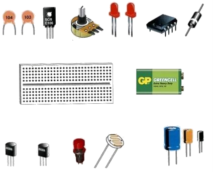
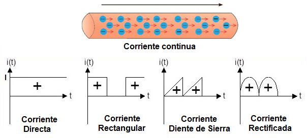

Jesús Ignacio Calle Pérez
Diego Hernando Orozco Gómez
Sergio Hernando Ruiz Obando
Introducción a la Electrónica
Componentes y Aplicaciones
Oscar Ignacio Botero Henao
Jesús Ignacio Calle Pérez
Diego Hernando Orozco Gómez
Sergio Hernando Ruiz Obando
Institución Universitaria Pascual Bravo
Córdoba (España)
2022
Título de la obra:
INTRODUCIÓN A LA ELECTRÓNICA
Componentes y Aplicaciones
Autores:
OSCAR IGNACIO BOTERO HENAO
JESÚS IGNACIO CALLE PÉREZ
DIEGO HERNANDO OROZCO GÓMEZ
SERGIO HERNANDO RUIZ OBANDO
Diseño del libro: Juan Guillermo Rivera Berrío
Código JavaScript para el libro: Joel Espinosa Longi, IMATE, UNAM.
Recursos interactivos: DescartesJS
Fuentes: Lato y UbuntuMono
Fórmulas matemáticas: $\KaTeX$
Red Educativa Digital Descartes
Córdoba (España)
descartes@proyectodescartes.org
https://proyectodescartes.org
Proyecto iCartesiLibri
https://proyectodescartes.org/iCartesiLibri/index.htm
ISBN: 978-84-18834-24-0

Esta obra está bajo una licencia Creative Commons 4.0 internacional: Reconocimiento-No Comercial-Compartir Igual.
Tabla de contenido
Prefacio
El libro interactivo fue elaborado por los docentes ocasionales Oscar Ignacio Botero Henao, Jesús Ignacio Calle Pérez, Diego Hernando Orozco Gómez y Sergio Hernando Ruiz Obando, pertenecientes a la Facultad de Ingeniería – Departamento de Electrónica y afines de la Institución Universitaria Pascual Bravo. No obstante, puede ser utilizado en cualquier Institución de Educación con fines netamente educativos.
¿Por qué HTML5?
En 2010 Steve Jobs hizo una fuerte crítica a Flash, en tanto que su
desempeño es bueno en ordenadores, pero no lo es para dispositivos móviles. Recomendó, entonces, el uso de HTML5 para la creación de aplicaciones y juegos, además de ser una tecnología sin costo. Con el tiempo, Adobe declaró que iba a dejar de desarrollar la tecnología Flash para dispositivos móviles apoyando a HTML5.
El HTML5 tiene por objetivo la homologación de todos los buscadores y sistemas operativos para que cualquier dispositivo móvil pueda desplegar gráficos, animaciones y videos, e incluso aplicaciones multimedia. Desde 1998 el Consorcio de Internet (World Wide Web Consortium W3C) dejó de evolucionar el protocolo HTML y comenzaron a buscar nuevas maneras de desplegar una red más atractiva desde su base. Tras diversas pruebas y decisiones, en 2007 se formó el grupo actual de trabajo del W3C que revisa la implementación de HTML5.
Su evolución continúa, ya que aún no es estándar, se encuentra en Working Draft (Borrador de Trabajo), pero ya se está aplicando en muchos proyectos Web importantes. Empresas de gran peso en Internet están apoyando HTML5 e impulsando su estandarización y perfeccionamiento, entre ellas podemos nombrar a Google, Mozilla, Adobe y Microsoft, entre otras.
¿Qué es un Objeto Interactivo de Aprendizaje?
En este libro se tiene como una de las herramientas el Objeto Interactivo de Aprendizaje (OIA), es por ello que se considera un inciso sobre el concepto del mismo. Existe una amplia gama de definiciones sobre lo que debemos entender por un objeto de aprendizaje (OA). El Comité de Estándares de Tecnologías de Aprendizaje (LTSC: Learning Technology Standards Committee) propone la siguiente definición:
"Un Objeto de Aprendizaje es cualquier entidad, digital o no digital, la cual puede ser usada, reusada o referenciada durante el aprendizaje apoyado por tecnología […]. Ejemplos de Objetos de Aprendizaje incluyen una lección, un simple archivo JPEG, contenidos multimedia, un video, simulaciones, cuadros digitales, animaciones…”.
Es común considerar como OA a cualquier recurso digital que pueda ser reutilizado en diferentes ámbitos educativos, teniendo en cuenta que el concepto de reutilización está influido por el contexto en el que puede ser utilizado un OA determinado. Una fotografía sin texto tiene más poder de reutilización que otra que lo incorpore, pues en este último caso se presentan problemas de comprensión del lenguaje.
Visto de esta manera, el desarrollo de objetos de aprendizaje se configura como un proceso que contempla una secuencia que va desde el diseño, el análisis de herramientas disponibles, la definición de criterios, la reflexión, y a su vez su producción, aplicación y evaluación. La definición más aceptada, desde el contexto de los recursos digitales, establece que el diseño debe contemplar objetivos como: la reutilización, de ahí la posibilidad que brinda para construir unidades más complejas en diferentes contextos; la interoperabilidad, la durabilidad (objetos que no requieren de actualizaciones periódicas) y la accesibilidad (fácilmente identificados y encontrados, bien clasificados por categorías, lo que obliga a almacenarlos en metadatos asociados a él).
Pero, ¿Qué es un objeto interactivo? Son objetos de conocimiento que permiten a los usuarios del objeto realizar inferencias. Son dos las condiciones que el objeto tiene que satisfacer para ser interactivo:
La primera condición consiste en que el objeto es utilizado por alguien para representar algo (un volumen de revolución, por ejemplo) y la segunda, que Contessa llama razonamiento subrogatorio, es que el objeto permita que sus usuarios realicen inferencias específicas desde el objeto al fenómeno que representa. Por tanto, el objeto no sólo integra la teoría que pretendemos representar, también permite intervenir en su percepción en tanto que interactúa en los procesos cognitivos de los usuarios. La percepción, indudablemente, será de un grado superior. Este objeto de aprendizaje, así comprendido, se constituye en un efectivo mediador (virtual) entre lo que se representa y el usuario que interpreta, o entre la teoría y el usuario, con dos posibles propósitos: que el usuario intervenga sobre lo representado (he ahí la interactividad) y que infiera y deduzca la teoría que sustenta (he ahí la efectividad); es decir, promueve su conocimiento significativo.
Este libro digital interactivo se ha diseñado utilizando el editor de Descartes para HTML5, de tal forma que se pueda leer en ordenadores y dispositivos móviles sin necesidad de instalar ningún programa o plugin.
VARIABLES ELÉCTRICAS BÁSICAS
Introducción a las variables eléctricas
La definición de variable según la Real Academia Española (RAE) es: “magnitud que puede tener un valor cualquiera de los comprendidos en un conjunto”. En la Figura 1 se observa un infograma relacionando las variables eléctricas básicas utilizadas en el área de la electrónica.
"Clic en la imagen para ampliarla"
En la Figura 2 se muestra una analogía entre las variables eléctricas y un sistema hidráulico básico, donde la motobomba representa el voltaje, la llave la resistencia, el flujo de agua la corriente eléctrica, la tubería los conductores y el tanque es un elemento de almacenamiento de energía.
$$\displaystyle No.\;electrones\;(e^-)\;=\;No.\;protones\;(p^+)\qquad(1)$$
"Clic en la imagen para ampliarla"
Carga Eléctrica
Charles Coulomb (1736 - 1806) Físico francés. Su celebridad se basa sobre todo en que enunció la ley física que lleva su nombre (ley de Coulomb). Desarrolló un aparato de medición de las fuerzas eléctricas involucradas en la ley de Priestley, y publicó sus resultados entre 1785 y 1789. Estableció que las fuerzas generadas entre polos magnéticos iguales u opuestos son inversamente proporcionales al cuadrado de la distancia entre ellos. |
Se habla de carga eléctrica, cuando un átomo gana o pierde electrones (e-). Experimentalmente, Coulomb encontró que existían dos clases de carga a las que identificó como positivas (átomos que pierden e- ) y negativas (átomos que ganan e- ).
La carga se representa con la letra Q y su unidad es el Coulomb (o Columbio) y equivale a tener
$$\displaystyle 1\;Coul=6,24*10^{18}\;e^-\;\;\;\;\;\;1e=1,6*10^{-19}\;Coul\qquad(2)$$
El "Coulomb" se define como la carga que separada un metro de otra exactamente igual (en polaridad), la repele con una fuerza de:
$$\displaystyle K=9*10^9\;N\qquad(3)$$
NOTA: las letras MAYÚSCULAS se usan para representar cantidades constantes y las MINÚSCULAS para representar cantidades variables en el tiempo. Ejemplo: carga constante (Q) y carga variable (q)
Campo magnético: así como una carga produce en sus vecindades un campo eléctrico, una corriente circulando a través de un conductor produce a su alrededor un campo magnético. Este campo tiene las mismas propiedades del campo magnético producido por un imán y puede ser concentrado enrollando el alambre en forma de bobina. El símbolo para la densidad de flujo de un campo magnético es B y su unidad de medida en el sistema internacional es el Tesla (T). |
Todo átomo cargado eléctricamente, ejerce una fuerza a su alrededor que se conoce como campo eléctrico. Por convención, se considera que las cargas positivas ejercen dichas fuerzas hacia afuera y las cargas negativas hacia adentro (figura 4).
La ley fundamental de las cargas, dice que: cargas puntuales del mismo signo se repelen y cargas puntuales de signo contrario se atraen (figura 5).
- De clic en la esquina superior derecha de la ventana, para hacer uso de este recurso interactivo "Cargas y Campos":
La magnitud de la fuerza de atracción o repulsión entre dos cargas: q1 y q2 separadas una distancia r está dada por:
$$\displaystyle F=\frac{K*q1*q2}{r^2}\qquad(4)$$
De la Ecuación 4, se deduce que la fuerza entre cargas es directamente proporcional a ellas e inversamente proporcional al cuadrado de la distancia.
$$\displaystyle K=9*10^9\;N\frac{m}{C^2}\qquad(5)$$
NOTA: estas unidades corresponden al sistema internacional de unidades (SI)
Resistencia Eléctrica
Es la oposición que presenta un material al paso de la corriente eléctrica. La resistencia se representa por la letra R y su unidad es el Ohmio:
La resistencia desde el punto de vista constructivo se define como:
$$\displaystyle R=\rho\frac {l}{A}\qquad(6)$$
NOTA: la resistencia para los metales y casi todos los otros conductores es Cconstante y para los semiconductores es variable (esto es de mucha utilidad en rectificadores, amplificadores, pararrayos, celdas fotoeléctricas, etc.)
Georg Simon Ohm (1789 - 1854) Físico alemán. Descubrió la ley de la electricidad que lleva su nombre. En 1817 fue nombrado profesor de matemáticas y física en el Instituto de Colonia. Dedicado desde el principio a los estudios de galvanoelectricidad, en 1827 publicó aspectos más detallados de su ley en un artículo titulado Die galvanische Kette, mathematisch bearbeitet (El circuito galvánico investigado matemáticamente). En honor a su labor, la unidad de resistencia eléctrica del sistema internacional lleva su nombre (ohmio). |
La resistencia desde el punto de vista eléctrico se define por la LEY DE OHM, como
$$\displaystyle R=\frac{V}{I}\qquad(7)$$
donde R es resistencia en ohmios, V es voltaje en Voltios, I es corriente en amperios
Para un mejor manejo matemático de la ley de Ohm, se usa el siguiente triángulo como ayuda:
La ley de Ohm establece que el voltaje es directamente proporcional a la corriente que circula por un conductor.
Conductancia Eléctrica
El opuesto de la resistencia es la Conductancia. Se representa por la letra G y su unidad es el Siemens (S) o mho:
$$\displaystyle G=\frac{1}{R}\qquad(8)$$
Conductancia Eléctrica es la facilidad que ofrece un material al paso de la corriente eléctrica; o sea que, la conductancia es la propiedad inversa de la resistencia eléctrica.
• Un material "X" tiene una resistencia con un valor: R = 1Ω. ¿Cuál es valor de la conductancia?
R/. Usando la fórmula G = 1/R, se obtiene G = 1/1Ω = 1 siemens (S)
• Un material "Y" tiene una resistencia con un valor: R = 1000Ω. ¿Cuál es valor de la conductancia?
R/. Usando la fórmula G = 1/R, se obtiene G = 1/1000Ω = 0,001 milisiemens (mS)
De los dos (2) ejemplos anteriores se deduce que:
• La conductancia del material "X" es la mayor; lo que significa que, conduce mejor la corriente eléctrica que el material "Y".
Corriente Eléctrica
André - Marie Ampère (1775-1836) Matemático y físico francés. Inventó el primer telégrafo eléctrico y el electroimán. Formuló en 1827 la teoría del electromagnetismo. El amperio (en francés, ampère) se llama así en su honor. Fue gracias a Ampère que se dieron a conocer los términos de corriente eléctrica y tensión eléctrica. |
Es la cantidad de carga eléctrica que pasa por un conductor eléctrico, por unidad de tiempo:
$$\displaystyle i(t)=\frac {d}{dt}q(t)\qquad(9)$$
La corriente se representa por la letra i(t) y su unidad básica es el Amperio, q(t) es la carga en coulomb y t es la unidad de tiempo en segundos.
Para el sentido de la corriente eléctrica se consideran dos casos:
Flujo convencional: se considera que el sentido de la corriente se debe a cargas positivas y estas circularán de más a menos (figura 8).
Flujo electrónico o real: se considera que el sentido de la corriente se debe a cargas negativas (electrones) y estas circularán de menos a más (figura 8).
Existen también dos tipos de corriente eléctrica:
Corriente continua
En este caso los electrones circulan en un solo sentido y la corriente siempre es variable en el tiempo. Este tipo de corriente se encuentra en pilas, baterías, generadores de DC (dinamos), etc.
"Clic en la imagen para ampliarla"
$$$$
"Clic en la imagen para ampliarla"
Corriente alterna
En esta, los electrones circulan en ambos sentidos y la corriente siempre es variable en el tiempo. Este tipo de corriente se encuentra en generadores de AC (alternadores).
"Clic en la imagen para ampliarla"
Voltaje, tensión, potencial o FEM
Es el estado eléctrico en que se encuentra un cuerpo. Se puede determinar el potencial eléctrico de los cuerpos, al hallar la diferencia entre sus electrones y protones.
El potencial eléctrico se define como el trabajo (fuerza por distancia) que se debe realizar sobre la unidad de carga (1 Coulombio) para trasladarla desde un punto a otro.
$$\displaystyle v(t)=\frac {d}{dq}w(t)\qquad(10)$$
Se representa por la letra v(t) y su unidad es el Voltio, w(t) es el trabajo en Joules y q(t) es la carga en coulombios. El potencial eléctrico se conoce con otros nombres, como: tensión, voltaje, F.E.M (Fuerza Electromotríz). También se usan erróneamente los términos: diferencia de potencial o caída de tensión.
James Prescott Joule (1818-1889) Físico inglés. Joule estudió el magnetismo, y descubrió su relación con el trabajo mecánico, lo cual le condujo a la teoría de la energía. Trabajó con Lord Kelvin para desarrollar la escala absoluta de la temperatura, hizo observaciones sobre la teoría termodinámica (Ley de Joule) y encontró una relación entre la corriente eléctrica que atraviesa una resistencia y el calor disipado, llamada actualmente como Ley de Joule. |
La carga eléctrica que se mueve dentro de una red lo hace a través de puntos que tienen distinto potencial eléctrico.
NOTA: se considera que una carga que se encuentra en un punto del circuito donde existe un alto potencial eléctrico se moverá hacia otro de bajo potencial eléctrico.
Existen dos tipos de voltaje:
Voltaje continuo
Es aquella fuerza que impulsa los electrones en un solo sentido y puede o no variar en el tiempo. Este tipo de voltaje se encuentra en pilas, baterías, generadores de DC (dinamos), etc.
"Clic en la imagen para ampliarla"
Voltaje alterno
Es aquella fuerza que impulsa los electrones en ambos sentidos y puede o no variar en el tiempo. Este tipo de voltaje se encuentra en generadores de AC (alternadores).
"Clic en la imagen para ampliarla"
• Convenciones para corrientes y voltajes:

La figura 13 ilustra las convenciones que se manejarán a lo largo de todo el estudio de los circuitos eléctricos. Por convención, la referencia gnd se denomina tierra y se le asigna un voltaje de cero (0) voltios; también se le conoce como voltaje de referencia.
Adicionalmente, si V1 > V2, la corriente se establece en la dirección de A hacia B, como se puede ver en la figura 13. En el caso de que V2 > V1, la dirección de la corriente será de B hacia A.
Una corriente negativa es la que va en sentido contrario al indicado previamente. En el caso de voltajes de doble índice, por ejemplo Vab, Vbe, se tiene que el voltaje definido, corresponde al voltaje del primer índice menos el voltaje del segundo índice, así:
$$V_{ab}=V_a-V_b\;\;\;\;\;\;V_{be}=V_b-V_e\tag{11}$$
Un voltaje negativo es el que es menor que el voltaje de referencia gnd.
Alessandro Volta (1745 -1827) Físico italiano. Inventó la pila, precursora de la batería eléctrica. Volta logró, por primera vez, producir corriente eléctrica continua a voluntad. Dedicó la mayor parte de su vida al estudio de los fenómenos eléctricos, inventó el electrómetro y escribió numerosos tratados científicos. |
Potencia Eléctrica
La potencia se define como la cantidad de trabajo o energía que se realiza por unidad de tiempo:
$$\displaystyle p(t)=\frac {d}{dt}w(t)\qquad(12)$$
La potencia se representa por la letra p(t) y su unidad es el Vatio, w(t) es el trabajo realizado en Joules y t es el tiempo en segundos. Aplicando la regla de la cadena a la expresión (12), se obtiene una importante relación entre la potencia y las variables circuitales corriente y voltaje, así:
$$\displaystyle p(t)=\frac {d}{dt}q(t)\;*\; \frac {d}{dq}w(t)\qquad(13)$$
De donde se deduce, de acuerdo con las expresiones (9) y (10):
$$\displaystyle p(t)=i(t)*v(t)\qquad(14)$$
Esta expresión corresponde a la ley de Watt, la cual establece que la potencia es directamente proporcional a la corriente y al voltaje sobre un elemento. Para un mejor manejo matemático de la ley de Watt, se usa el siguiente triángulo como ayuda:
Conociendo la corriente y el voltaje puede determinarse la potencia y la energía suministrada o absorbida entre el instante: t = t0 y un instante t cualquiera, así:
$$\displaystyle w(t)=\int_{t_0}^{t} i(t)v(t)\, dt\qquad (15)$$
- Convención pasiva de signos:
El comportamiento de un elemento por el flujo de energía, depende de la clase de elemento de que se trate, como ejemplo las resistencias devuelven al instante esta potencia en forma de calor que es liberado al aire, mientras que algunas fuentes como las baterías, transforman esta potencia en energía química que es almacenada.
"Clic en la imagen para ampliarla"
Si el valor de la potencia asociado a algún elemento resulta negativo, indica que este elemento está entregando energía al circuito al cual se encuentra conectado, como ejemplo se puede verificar en un automóvil al momento de arrancar, la batería se encuentra entregando energía al circuito eléctrico de arranque y el valor de la potencia asociado a esta batería, es en este caso negativo, mientras que el valor de potencia asociado al motor de arranque es positivo. Este concepto se puede entender más fácilmente en la figura 15.
En la figura 15 se observan cuatro tipos diferentes de relaciones voltaje-corriente; en la parte izquierda el elemento absorbe energía, ya que la corriente entra por el terminal positivo, o lo que es lo mismo, una corriente sale por un terminal negativo. En la parte derecha una corriente entra por un terminal negativo o sale por un terminal positivo, este elemento está entregando energía en ambos casos. En el primer caso se refiere a potencia absorbida, consumida o disipada y en el segundo caso se refiere a potencia suministrada o entregada.
James Watt (1736-1819) Matemático e ingeniero escocés. Fue el inventor de la máquina de vapor. Watt inventó el movimiento paralelo para convertir el movimiento circular a un movimiento casi rectilíneo, del cual estaba muy orgulloso, y el medidor de presión para medir la presión del vapor en el cilindro a lo largo de todo el ciclo de trabajo de la máquina, mostrando así su eficiencia y ayudándolo a perfeccionarla. |
Notación Científica
La notación científica permite expresar valores muy grandes y muy pequeños de forma simplificada o campacta, usando prefijos que multiplican o dividen por 1000 (103) el valor unitario o unidad básica. Es muy utilizada en el área Ingenieril.
"Clic en la imagen para ampliarla"
Existen más prefijos para los Múltiplos y para los Submúltiplos ,de la unidad básica, como son:
Múltiplos de la unidad:
- Peta (P) = 1015
- Exa (E) = 1018
- Zetta (Z) = 1021
- Yotta (Y) = 1024
Existen más prefijos para los submúltiplos y para los múltiplos, como son:
Submúltiplos de la unidad:
- femto (f) = 10-15
- atto (a) = 10-18
- zepto (z) = 10-21
- yocto (y) = 10-24
"Clic en la imagen para ampliarla"
Cuando se convierte una magnitud de menor a mayor (desplazamiento de izquierda a derecha en la recta de la notación científica) se DIVIDE por la base 10 elevado a la cantidad de posiciones que debe desplazarse o correr la coma hacia la izquierda el número de posiciones que debe desplazarse.
Ej: Convierta 8900000μV a V:
Entre μV y V hay 10-6 o -6 intervalos, entonces se divide por 10-6 o por 1000000.
$$\displaystyle \frac{8900000}{10^6}=\frac{8900000}{1000000}={8,9V}$$
Otra forma es con los -6 intervalos:
"Clic en la imagen para ampliarla"
Cuando se convierte una magnitud de mayor a menor (desplazamiento de derecha a izquierda en la recta de la notación científica) se MULTIPLICA por la base 10 elevado a la cantidad de posiciones que debe desplazarse o correr la coma hacia la derecha el número de posiciones que debe desplazarse.
Ej: Convierta 0,013GΩ a KΩ:
Entre GΩ y KΩ hay 106 o 6 intervalos, entonces se multiplica por 106 o 1000000
$$\displaystyle {{0,013}\times{10^6}}={{0,013}\times{1000000}}={13000KΩ}$$
Otra forma es con los 6 intervalos:
"Clic en la imagen para ampliarla"

Ejercicios propuestos con respuestas:
• ¿250mA a A? ➤ R/. 0,25A
• ¿0,58KW a W? ➤ R/. 580W
• ¿0,0369nA a pA? ➤ R/. 36,9pA
• ¿510000KΩ a MΩ? ➤R/. 510MΩ
• ¿0,89MW a KW? ➤ R/. 890KW
Resumen de variables eléctricas básicas
"Clic en la imagen para ampliarla"

Objetos Interactivos de Aprendizaje (OIA)
!Hola! Eres bienvenido a participar en los siguientes Objetos Interactivos de Aprendizaje (OIA), el cual te ayudarán a reforzar el aprendizaje del tema tratado sobre las variables eléctricas básicas y sus inventores.
Para ejecutar el objeto interactivo da clic en la esquina superor derecha y deberas relacionar por medio de flechas las palabras de los cajones de la izquierda con los de la derecha. En total son tres rondas.
Y te invitamos a que participes en este otro Objeto Interactivo de Aprendizaje "sopa de letras" en el cual debes encontrar 12 términos con base en el tema tratado en esta unidad, en las direcciones vertical y horizontal. Tiene 6 minutos para encontrar dichos términos.
Calculadora de las Leyes de OHM y WATT: (octavo ícono)
MANEJO DE ELEMENTOS E INSTRUMENTOS DE LABORATORIO
Protoboard
El protoboard es una plantilla con orificios, la cual sirve para ensamblar circuitos sin requerir colocar puntos de soldadura y permite modificar rápidamente los circuitos electrónicos. Las conexiones se realizan por medio de cable UTP, cables de conexión rápida o conexión directa entre componentes.
"Clic en la imagen para ampliarla"
Las partes que conforman el protoboard son los buses que sirven para llevar la alimentación de voltaje a lo largo del mismo y el cuerpo que es la zona donde se ensamblan los circuitos. Algunos protoboard tienen los buses partidos en la mitad del trayecto, por lo que habría que hacerle un puente para que conduzca de extremo a extremo.
Las líneas rojas y azules en la figura 22 indican como se establece la conducción. No existe conexión física entre ellas, es decir, no hay conducción entre las líneas rojas y azules. En los buses se acostumbra conectar la fuente de poder o las señales que se requieren suministrar a los circuitos.
Por su parte, en el cuerpo las pistas en color morado proveen puntos de contacto (nodos) para los pines o terminales de los componentes que se ubican en el protoboard siguiendo el plano esquemático (SCH) de un circuito, y conducen como se ven dibujadas (color morado) y son iguales en todo el cuerpo del protoboard.
"Clic en la imagen para ampliarla"
Internamente el contacto eléctrico se realiza a través de laminillas en las que se insertan los terminales de los componentes. Estas no están visibles, ya que se encuentran por debajo de la cubierta plástica aislante tal como se observa en la figura 23.
En el cuerpo del protoboard los cinco orificios de la parte izquierda se encuentran separados de los cinco orificios de la parte derecha por un canal central
"Clic en la imagen para ampliarla"
Se puede ver en la figura 25 un plano pictórico con las conexiones al protoboard. Los componentes que conforman el circuito son: fuente de voltaje, resistencia (resistor) y condensador (capacitor).
"Clic en la imagen para ampliarla"
En la figura anterior, la línea roja y negra representan los cables que van conectados desde los bornes disponibles para acoplar fuentes hacia alguna línea del protoboard; por otro lado, las líneas verdes indican el lugar donde debería insertarse el pin o terminal correspondiente de cada elemento del circuito. Como se puede apreciar, solo se requiere que dos terminales estén ajustados en la misma línea para que estén conectados eléctricamente.
Aunque no existen reglas definidas para el montaje de circuitos en el protoboard y cada persona puede armar un circuito según sus gustos y habilidades, se deben tener en cuenta algunos aspectos básicos con la finalidad que el proyecto sea funcional y de fácil modificación.
• Tener a la mano todos los componentes para ensamblar el circuito según la lista de materiales.
• Dejar la suficiente separación entre los elementos para facilitar la medida y el ensamble de los demás componentes hasta completar el circuito.
• No corte los terminales de los componentes ya que en algunos casos es necesario cambiarlos de lugar donde se requiere que estos sean más largos.
• Utilizar en lo posible un extractor de circuitos integrados (CI o U) para retirarlos o colocarlos.
• No instalar sobre el protoboard componentes que generen una gran cantidad de calor, debido a que pueden ocurrir derretimientos del plástico dañando la placa. Tal es el caso de resistencias de potencia, reguladores de voltaje, triac, SCR, dispadores de calor y demás.
• No utilizar componentes cuyos terminales sean muy gruesos o alambres de calibres considerables ya que dañarán las laminillas de los contactos internos que reciben las terminales de los dispositivos o de los alambres que hacen de "puente" entre ellos; no forzar ningún terminal o alambre dentro de los orificios.
• En lo posible, no utilizar el protoboard para circuitos de corriente alterna por encima de los 110 V, ya que el aislamiento no es suficiente y pueden generarse corto circuitos, sobrecargas o presentarse posibles situaciones de riesgo eléctrico.
• El montaje de los circuitos debe ser tan organizado como sea posible. Esto no solamente obedece a consideraciones de tipo estético y técnico, sino a que un circuito ordenado es más fácil de ser diagnosticado en caso de mal funcionamiento o de ser modificado. En lo posible el cableado debe ser lo más corto que se pueda.
• En los buses no se deben conectar terminales de los componentes.
• Los elementos se deben colocar de forma paralela a las caras del protoboard.
"Clic en la imagen para ampliarla"
Herramientas e Insumos
A continuación se tratará el tema de herramientas e insumos más utilizados en el área de la electrónica.
Cautín
Llamado tambien "soldador eléctrico", es una herramienta utilizada para soldar los componentes eléctricos y/o electrónicos. Funciona convirtiendo la energía eléctrica en calórica sobre una barra de metal, la cual se usa para provocar la fusión del estaño y el oro y de esta forma poder unir componentes electrónicas, cables o alambres.
"Clic en la imagen para ampliarla"

Está compuesto por cinco elementos básicos:
• Barra de metal • Alambre de cobre• Cable de conexión
• Enchufe
• Estructura de plástico o madera
El sistema eléctrico del cautín, comienza por el paso de la energía eléctrica mediante el enchufe adquirida de un toma corriente, luego a través del cable de conexión hasta llegar al alambre de cobre que al estar enrollado sobre la barra de metal va a generar calor, que servirá para derretir la soldadura.
Desoldador o extractor de estaño
"Clic en la imagen para ampliarla"
Su forma es parecida a un inyector, se compone de un tubo que realiza la función de depósito, dicho tubo suele ser de plástico o aluminio, en su interior guarda un pistón o émbolo accionado por un muelle, unido a una varilla que sobresale por uno de los extremos y en el otro extremo tiene una punta de plástico u otros materiales como el teflón que resisten el calor de fusión del estaño al extraerlo.
Pomada o pasta para soldar
Las pastas para soldar están mezcladas con un fundente (flux), que tienen como objetivo remover las capas de oxido del metal, ayudando a unir metales sin fundirlos. Son muy utilizadas en procesos de soldadura.
"Clic en la imagen para ampliarla"
Soldadura de estaño
El estaño para soldar es el material que se utiliza para unir las partes de manera que se toquen y cubrirlas con una gota de estaño fundido que al enfriarse constituye la unión.
¿Cómo soldar con estaño?
• La punta del cautín debe estar limpia. En ningún caso se raspará la punta con una lima, goma de borrar, tijeras o similar, ya que puede dañarse el recubrimiento de cromo que tiene la punta.
• Las piezas a soldar deben estar totalmente limpias y se aconseja preestañadas.
• Lo ideal es utilizar cautines de 15 a 30w nunca superior. Si es superior los componentes del circuito se pueden dañar si se aplica demasiado calor.
• Acercar los elementos a unir hasta que se toquen, de ser necesario utilizar pinzas para sujetar las piezas.
• Calentar las partes a soldar con el cautín, las piezas se empiezan a calentar hasta que alcanzan la temperatura del soldador, tarda aproximadamente entre 2 y 3 de segundos y no se debe soplar la soldadura.
• Sin quitar el cautín, aplicar el estaño, unos pocos milímetros a la zona de la soldadura y distribuir por la superficie.
• La resina del estaño, al tocar las superficies calientes, alcanza el estado de semilíquido y sale de las cavidades, distribuyéndose por la superficie de la soldadura.
"Clic en la imagen para ampliarla"
La temperatura de fusión depende de la aleación utilizada, cuyo componente principal es el estaño y suele estar comprendida entre unos 200ºC a 400ºC.
Porta cautín
Base o soporte para cautín tipo lápiz que permite sostener está herramienta para soldar mientras se trabaja con él y evitar quemaduras corporales o de inmoviliario y por ende dar mayor libertad de trabajo mientras se utiliza.
"Clic en la imagen para ampliarla"
Circuito impreso
Es una superficie constituida por caminos, pistas o buses de material conductor laminadas sobre una base no conductora; su función es interconectar eléctricamente por medio de pistas los diferentes dispositivos que conforman el circuito. Las pistas generalmente son de cobre y la placa de resinas de vidrio o polímeros como la baquelita.
"Clic en la imagen para ampliarla"
"Clic en la imagen para ampliarla"
Cortafrío
Es una herramienta manual de corte que se utiliza principalmente para cortar cables y/o alambres, incluyendo las terminales de los componentes electrónicos despues de ser soldados en el circuitos impresos. Puede usarse para cortes lateral o diagonal.
"Clic en la imagen para ampliarla"
Pelacable
Son herramientas que se utilizan para retirar la cubierta exterior de un cable o alambre y dejar los conductores expuestos, con el fin de realizar alguna conexión. Se deben tener bien calibrados para evitar cortar los conductores.
Los tipos de pelacables son: manuales y automáticos.
"Clic en la imagen para ampliarla"
Pinzas
Hay muchos tipos de pinzas, pero en este apartado se hablará de la pinza de punta curva, de punta recta y punta redonda.
"Clic en la imagen para ampliarla"

Las pinzas de punta curva es una herramienta manual utilizada para manipular y reparar aparatos electrónicos, debido a que su punta permite sujetar piezas e ingresar en forma diagonal.
Las pinzas de punta recta son muy utilizadas en trabajos de reparación de aparatos electrónicos ya que sus mordazas puntiagudas permiten sujetar piezas muy pequeñas.
"Clic en la imagen para ampliarla"
Las pinzas de punta redonda permite enrollar cables y/o alambres.
"Clic en la imagen para ampliarla"

Perilleros
El juego de los destorilladores perilleros es muy útil en la manipulación de algunas componentes electrónicas que sirven para calibrar o sintonizar los circuitos.
"Clic en la imagen para ampliarla"
Tercera mano
"Clic en la imagen para ampliarla"

La tercera mano es un soporte metálico con mucha movilidad, en cuyo borde se encuentra una o dos pinzas de precisión para sujetar objetos pequeños, lo cual permite mover las piezas y colocarlas en la posición que sea más cómoda para trabajar; puede o no tener como complementos una lupa y/o luz con el fin de facilitar el trabajo más detallado. Es una herramienta utilizada en el área de la electrónica.
Lupa
Este instrumento óptico dispone de una lente convergente que, al desviar la luz produce una imagen que amplifica el objeto observado que resulta demasiado pequeño para nuestra visión.
"Clic en la imagen para ampliarla"
Extractor de circuitos integrados
El extractor de circuitos integrados es una herramienta manual cuya función es poder extraer los circuitos integrados ya sean de una base o despues de desoldar, extrayéndolo de los extremos como se observa en la figura 42.
"Clic en la imagen para ampliarla"

Cables vs. Alambres
¿Sabes cuál es la diferencia entre cable y alambre?
La diferencia entre "Cable" y "Alambre" es que el cable está conformado por varios hilos de conductores y el alambre está conformado por un solo hilo conductor.
"Clic en la imagen para ampliarla"
Un cable de cobre que es muy utilizado en el ensamble de circuitos en los protoboard es el "UTP", que proviene del acrónimo inglés de "Unshielded Twister Pair", o "Par Trenzado sin Apantallar".
Cable Cinta o Ribbon Cable
Es un cable con muchos hilos conductores dispuestos paralelamente cada uno junto a otro en el mismo plano lineal.
"Clic en la imagen para ampliarla"
Cables de conexión fácil
Son unos cables de 10cm o 20cm que ya traen ensamblados en sus extremos unas terminales que facilitan la conexión entre dispositivos o módulos.
Existen 3 tipos de cables de conexión fácil: Macho - Macho, Macho - Hembra y Hembra - Hembra.
• Los cables Macho - Macho poseen en ambos extremos terminales tipo pin.
• Los cables Macho - Hembra poseen en un extremo terminal tipo pin y en el otro extremo terminal tipo hembra.
• Los cables Hembra - Hembra poseen en ambos extremos conectores tipo hembra.
"Clic en la imagen para ampliarla"

Objeto Interactivo de Aprendizaje (OIA)
!Hola! Eres bienvenido a participar en los siguientes Objetos Interactivos de Aprendizaje (OIA), el cual te ayudarán a reforzar el aprendizaje del tema tratado sobre Manejo de elementos e Instrumentos de laboratorio.
Para ejecutar el objeto interactivo da clic en la esquina superor derecha.
Fuentes de Alimentación
Es una fuente de voltaje capaz de suministrar energía a un circuito eléctrico.
• Símbolos de las fuentes de voltaje DC (Corriente Directa):
"Clic en la imagen para ampliarla"

• Símbolo de fuente de voltaje AC (Corriente Alterna):
"Clic en la imagen para ampliarla"

• Símbolo de la fuente de corriente:
"Clic en la imagen para ampliarla"

Dispositivos:
Fuentes de alimentación DC:
• Batería
• Fuente de poder
Fuentes de alimentación AC:
• Transformador
• Variac
Batería
Es un dispositivo que consiste en dos o más celdas electroquímicas que pueden convertir la energía química almacenada en corriente eléctrica. Cada celda consta de un electrodo positivo, o cátodo, un electrodo negativo, o ánodo, y electrolitos que permiten que los iones se muevan entre los electrodos, permitiendo que la corriente fluya fuera de la batería para llevar a cabo su función (alimentar un circuito eléctrico).
NOTA: el dispositivo que consiste en una única celda electroquímica se conoce como "pila".
"Clic en la imagen para ampliarla"
"Clic en la imagen para ampliarla"
Fuente de poder
Básicamente es un dispositivo que entrega voltajes directos generalmente con las siguientes salidas:
• Fuente de 12 V fija.
• Fuente de 5 V fija.
• Fuente variable de 1,25 V hasta 35 V.
El esquema de funcionamiento de las tres salidas anteriormente mencionadas es básicamente el mismo, solo que en los primeros casos las tensiones de salida son fijas.
Estas fuentes proveen un voltaje de salida directo, similar al de una pila o una batería. En la siguiente figura se muestra el diagrama en bloques de la fuente de poder y se explican las siguientes partes:
"Clic en la imagen para ampliarla"

• Un transformador, que reduce la tensión de la red de 110 V a 12 V.
• Un circuito rectificador que transforma la corriente alterna en continua.
• Un circuito de filtrado para aplanar la onda (corriente directa).
• Un circuito de regulación para permitir una salida fija de valor estable.
• Circuitos de protección contra sobrecargas y cortocircuitos a la entrada y a la salida.
Las fuentes de alimentación poseen un circuito de protección para evitar que aumente la corriente a través del mismo y se dañen los circuitos integrados reguladores de voltaje. Este circuito activa su funcionamiento cuando las puntas de salida se ponen en cortocircuito o se conectan a través de una resistencia muy baja.
Antes de conectarse cualquiera de las fuentes a un circuito externo, debe verificarse que no se hayan cometido errores en el ensamble y que no se encuentre en cortocircuito, ya que la conexión en estas condiciones puede dañar la fuente y el protoboard. Se recomienda medir la resistencia total del circuito con el óhmetro y en caso de marcar 0Ω revisar el circuito determinando la posible existencia de un cortocircuito, situación que se debe corregir.
Los cables de conexión a la fuente recomendados son del tipo banana – pinza de precisión o caimanes.
"Clic en la imagen para ampliarla"
Los bornes de la fuente son dos terminales del tipo banana, para chasis, en las cuales, el color negro indica el borne negativo de la fuente y el color rojo el borne positivo.
En la figura a continuación se muestra un diagrama del panel frontal de la fuente de alimentación para uso en el laboratorio.
"Clic en la imagen para ampliarla"

El diagrama cuenta con un interruptor con piloto el cual suministra indicación luminosa en el momento en que la fuente está conectada a la red de alimentación eléctrica y funcionando. Si el interruptor piloto está apagado es debido a que el cable de alimentación no provee continuidad o que el fusible de entrada esté abierto.
La fuente provee diferentes salidas, las cuales además cuentan con un piloto indicador (LED: diodo emisor de luz) que muestra el estado de funcionamiento normal de la misma. Si el LED se encontrara apagado, indica que el fusible frontal se encuentra abierto y es necesario reemplazarlo.
Fuentes DC comerciales
"Clic en la imagen para ampliarla"

"Clic en la imagen para ampliarla"

Fuentes de energía de corriente alterna - Transformadores y Variac
- Tranformador:
Un transformador eléctrico es un dispositivo de corriente alterna que permite variar el voltaje manteniendo la frecuencia y la potencia, en el caso de un transformador ideal.
Es un dispositivo que transforma la electricidad en magnetismo en el devanado primario (de entrada) y a su vez en electricidad en el devanado secundario (de salida). Al paso de electricidad a magnetismo se le llama electromagnetismo y al paso de magnetismo a electricidad se le llama inducción.
"Clic en la imagen para ampliarla"

Los transformadores están compuestos por diferentes elementos como el núcleo y los devanados.
El núcleo de los transformadores está formado por chapas de acero al silicio aisladas entre ellas. Están compuestos por dos partes principales: las columnas, que es la parte donde se montan los devanados, y las culatas, que es la parte donde se realiza la unión entre las columnas. El núcleo se utiliza para conducir el flujo magnético, ya que es un gran conductor.
Por su parte el devanado es un hilo de cobre enrollado a través del núcleo en uno de sus extremos y recubierto por una capa aislante, que suele ser barniz. Está compuesto por dos bobinas, la primaria y la secundaria. La relación de vueltas del hilo de cobre entre el devanado primario y el secundario indica la relación de transformación. El nombre de primario y secundario es algo simbólico: por definición donde se aplica la tensión de entrada será el primario y donde se obtiene la tensión de salida será el secundario.
"Clic en la imagen para ampliarla"

"Clic en la imagen para ampliarla"
- Símbolos electrónicos de los transformadores:
"Clic en la imagen para ampliarla"

- Relación de transformación:
"Clic en la imagen para ampliarla"
Donde EP es el número de vueltas del devanado del primario (NP), ES el número de vueltas del secundario (NS), VP la tensión aplicada en el primario, VS la tensión obtenida en el secundario, IS la intensidad que llega al primario, IP la intensidad generada por el secundario y rt la relación de transformación.
$$\displaystyle \frac{Np}{Ns}=\frac{Vp}{Vs}=\frac{Is}{Ip}={rt}\qquad(16)$$
Si se requiere ampliar la tensión en el secundario se debe colocar más vueltas en él; y lo contrario si se requiere reducir la tensión del secundario.
Esta tensión de entrada VP recorre un determinado número de vueltas NP, mientras que la tensión de salida VS tiene que recorrer la totalidad de las vueltas NS.
"Clic en la imagen para ampliarla"
- Pruebas de chequeo:
• Verifique la continuidad (R = 0Ω) en cada devanado.
• Verifique que no haya continuidad entre los devanados del primario y del secundario.
• Prueba de contacto a masa o aislamiento: que ningún devanado tenga continuidad con el núcleo del transformador.
"Clic en la imagen para ampliarla"
- Variac:
"Clic en la imagen para ampliarla"
Un variac es un auto transformador variable con el que se puede obtener un voltaje de salida de corriente alterna (VAC) entre 0 voltios y el voltaje de alimentación o entrada. Posee varios devanados reductores conectados a un interruptor rotatorio, con el cual se reduce el voltaje desde el devanado primario, convirtiéendolo en una fuente variable de AC.
Objeto Interactivo de Aprendizaje (OIA)
!Hola! Eres bienvenido a participar en los siguientes Objetos Interactivos de Aprendizaje (OIA), el cual te ayudarán a reforzar el aprendizaje del tema tratado sobre Manejo de elementos e Instrumentos de laboratorio.
Para ejecutar el objeto interactivo da clic en la esquina superor derecha.
• A continuación se presenta un kit constructor de circuitos electrónicos, para que práctique:
Multímetro
También llamado polímetro o tester, es un instrumento eléctrico y/o electrónico portátil para medir directamente:
• Magnitudes eléctricas como corrientes, voltajes (tensiones o potenciales), resistencias, capacitancias, inductancias, frecuencias, temperaturas, entre otras.
• Verificar el estado de los componentes eléctricos y/o electrónicos como resistores (resistencias), inductores (bobinas), capacitores (condensadores), relevos (relay), transformadores, diodos, transistores, tiristores, entre otros.
Las magnitudes medidas pueden ser en corriente continua o en alterna y en varios rangos de medida por cada magnitud. Los multímetros pueden ser analógicos o digitales cuya función en esencia es la misma; los digitales son más precisos, resistentes y son actualizados constantemente en su tecnología.
En la siguiente figura se pueden ver una miscelánea de multímetros analógicos y digitales:
"Clic en la imagen para ampliarla"
Analógicos
Los multímetros analógicos son aquellos en que el valor obtenido de la medición es reflejado continuamente en el movimiento de una aguja (una característica básica), sobre una escala, que indica del valor de la magnitud medida. Tienen una llave rotativa para seleccionar las magnitudes y los rangos. También tienen dos tornillos de calibración, uno que permite ajustar la aguja a cero (posición de descanso) y el otro para ajustar el cero en la lectura de ohm.
En la siguiente figura se muestran las partes más relevantes de un multímetro analógico:
"Clic en la imagen para ampliarla"
"Clic en la imagen para ampliarla"
Las magnitudes que generalmente se pueden medir en un multímetro analógico básico son las siguientes:
Voltaje de corriente alterna (Vca), voltaje de corriente directa (Vcd), corriente de corriente alterna (Ica), corriente de corriente directa (Icd) y resistencia (Ω).
En la tabla siguiente se muestran las ventajas y desventajas de los multímetros análogos.
"Clic en la imagen para ampliarla"
Digitales
Los multímetros digitales son aquellos en que el valor obtenido de la medición es reflejado continuamente en un panel numérico (dígitos) para leer fácilmente los valores medidos. Dicho panel puede ser un conjunto de display de 7 segmentos, una pantalla LCD o cualquier otro sistema de visualización de dígitos. Al igual que los multímetros analógicos, tienen una llave rotativa para seleccionar las magnitudes y los rangos.
En la siguiente figura se muestran las partes más relevantes de un multímetro digital.
"Clic en la imagen para ampliarla"
"Clic en la imagen para ampliarla"

Las magnitudes que generalmente se pueden medir en un multímetro digital básico son las siguientes:
Voltaje de corriente alterna (Vca), voltaje de corriente directa (Vcd), corriente de corriente alterna (Ica), corriente de corriente directa (Icd), resistencia (Ω), continuidad (0Ω), capacitancia (µF), inductancia (µH o mH), frecuencia (Hz), hfe o ganancia de transistores (adimensional), voltaje de conducción de diodos y transistores (Vcd), entre otras.
En la tabla 4 se observan las simbologías en multímetros analógicos y digitales
"Clic en la imagen para ampliarla"

En la tabla 5 se muestran las ventajas y desventajas de los multímetros digitales.
"Clic en la imagen para ampliarla"
Medición de variables eléctricas
Consiste en los métodos, dispositivos y cálculos usados para medir las diferentes variables y parámetros eléctricos de un sistema. Usando transductores o acondicionadores de señal que convierten propiedades físicas como la temperatura, presión, flujo, fuerza, y muchas otras en señales eléctricas, que pueden ser convenientemente medidas y registradas.
Las mediciones eléctricas se realizan con aparatos especialmente diseñados según la naturaleza de la variable eléctrica a medir, es decir, si es alterna, continua o pulsante, y normalmente trabajan con una unidad eléctrica estándar como los ohmios, voltios, amperios, culombios, henrios, faradios, vatios, julios entre otras.
Los pasos básicos iniciales a seguir para realizar medidas de variables eléctricas o de elementos eléctricos y/o electrónicos con un tester:
1. Encender el multímetro.
2. Seleccionar la escala en la que se quiere realizar la medición, ya sea voltaje de CD o de CA, corriente de CD o de CA, resistencia, frecuencia, etc.
NOTA: no olvidar empezar por la mayor escala y se va a disminuyendo hasta determinar el valor más adecuado de la magnitud medida.
3. Comprobar que las puntas estén en los terminales correctos, en caso contrario reubicarlas.
4. Elegir con la llave selectora de medición, el valor más alto de la escala que se quiere medir.
5. Es muy importante leer el manual de operación de cada multímetro en particular, ya que, en él, el fabricante fija los valores máximos de corriente y tensión que puede soportar y el modo más seguro de manejo, tanto para evitar el deterioro del instrumento como para evitar accidentes al operario.
6. Para medir la resistencia de un elemento o grupo de elementos se usa la escala marcada con el término OHM o con la letra griega omega (Ω) y en dicha escala se puede tener diferentes rangos como 200, 2K, 20K, 2M y 20M. El rango de cada escala indica el máximo valor que se puede medir en ella y la unidad de la medida en que dará la magnitud medida.
Por ejemplo, si se tiene una medida de:
• 150Ω en la escala de 200Ω. Esto indica que la lectura máxima es de 200Ω y la obtenida es de 150Ω
• 1,5KΩ en la escala de 2KΩ. Esto indica que la lectura máxima es de 2KΩ y la obtenida es de 1,5KΩ (equivalente a 1.500Ω)
• 15,5KΩ en la escala de 20KΩ. Esto indica que la lectura máxima es de 20KΩ y la obtenida es de 15,5KΩ (equivalente a 15.500Ω).
• 1,5MΩ en la escala de 2MΩ. Esto indica que la lectura máxima es de 2MΩ y la obtenida es de 1,5MΩ (equivalente a 1’500.000Ω)
• 15,5MΩ en la escala de 20MΩ. Esto indica que la lectura máxima es de 20MΩ y la obtenida es de 15,5MΩ (equivalente a 15’500.000Ω)
7. Jamás usar el amperímetro para medir la corriente directamente de una fuente de voltaje, tensión, potencial o FEM (fuente de fuerza electromotriz), como pilas, baterías, acumuladores o la línea doméstica, ya que puede dañar el amperímetro.
Para tal objetivo debe colocar siempre una resistencia en serie con la fuente antes mencionada (para limitar la corriente y evitar daños tanto en el amperímetro como en la propia fuente).
NOTA: es importante tener una idea aproximada del rango de medida en que se encuentra el valor de la magnitud que deseamos medir y comprobar que éste es inferior al rango máximo tolerado por el instrumento, ya que en caso contrario puede ocasionársele graves desperfectos al equipo. Es recomendable empezar la medida utilizando la escala menos sensible del instrumento (la más alta) y después ir descendiendo hasta encontrar la escala más adecuada, es decir, aquella con la que podamos leer la mayor cantidad de cifras significativas en la medida.
Medición de voltajes o tensiones
En el capítulo 1 de las variables eléctricas básicas, se trató en detalle dichas variables. Respecto a los voltajes o tensiones, se explica que existen dos tipos de voltaje: Voltaje de corriente directa (VDC) y Voltaje de corriente alterna (VAC).
Para la medición del voltaje VDC, se deben realizar los siguientes pasos:
1. Situar la llave selectora en un rango VDC o en $$$$
Si se desconoce el nivel de voltaje o tensión, seleccionar el rango mayor y redúzcalo paulatinamente.
2. Conectar las puntas de prueba de la siguiente manera: la roja al terminal V/Ω y la negra al terminal COM.
3. Conectar las puntas de prueba en paralelo al elemento o circuito eléctrico bajo medición.
4. Encender la fuente de poder del circuito bajo prueba, y el valor del voltaje aparecerá en el display digital con su polaridad. Si en el display se lee un signo menos antes del valor, esto indica que las puntas de medición se han colocado al contrario.
"Clic en la imagen para ampliarla"

Para la medición del voltaje VAC, se deben realizar los siguientes pasos:
1. Situar la llave selectora en un rango VAC o en $$$$
Si se desconoce el nivel de voltaje o tensión, seleccionar el rango mayor y redúzcalo paulatinamente.
2. Conectar las puntas de prueba de la siguiente manera: la roja al terminal V/Ω y la negra al terminal COM.
3. Conectar las puntas de prueba en paralelo al elemento o circuito eléctrico bajo medición.
4. Encender la fuente de poder del circuito bajo prueba, y el valor del voltaje aparecerá en el display digital.
"Clic en la imagen para ampliarla"

Vídeos:
Video realizado por Reparatumismo, titulado "Uso del multímetro - polímetro en VAC uso de escalas del polímetro", licencia de atribución de Creative Commons.
Video realizado por Reparatumismo, titulado "Uso del multímetro ¿Qué sucede si nos equivocamos de escala de voltios VAC y VDC?", licencia de atribución de Creative Commons.
Medición de corrientes
Preparación para realizar mediciones de corriente:
• Desconectar la alimentación del circuito antes de conectar las puntas de prueba.
• Si conecta un conductor de prueba a una entrada de corriente antes de seleccionar un rango de corriente, se emite una señal acústica de advertencia.
• La tensión de circuito abierto en el punto de medición no debe ser superior a 1000 V.
• Siempre medir la corriente en serie con la carga, para lo cual se debe abrir una de sus terminales donde se debe conectar el instrumento de medida. Nunca mida la corriente en paralelo con una fuente de tensión.
Para la medición de corriente IDC, se deben realizar los siguientes pasos:
1. Situar la llave selectora en un rango IDC o en $$$$
Si se desconoce el nivel de corriente, seleccionar el rango mayor y redúzcalo paulatinamente.
2. Conectar las puntas de prueba de la siguiente manera: la roja al terminal mA o 10A y la negra al terminal COM.
3. Desconectar la alimentación eléctrica al circuito a medir.
4. Abrir el circuito a prueba, para establecer los puntos de medición.
5. Conectar las puntas de prueba en serie al elemento o circuito eléctrico bajo medición.
6. Conectar la alimentación eléctrica al circuito a medir.
7. Leer la pantalla y, si es necesario, eliminar toda condición de sobrecarga (OL = Over Load), aumentando el rango de IDC.
"Clic en la imagen para ampliarla"

"Clic en la imagen para ampliarla"

Para la medición de corriente IAC, se deben realizar los siguientes pasos:
1. Situar la llave selectora en un rango IAC o en $$$$
Si se desconoce el nivel de corriente, seleccionar el rango mayor y redúzcalo paulatinamente.
2. Conectar las puntas de prueba de la siguiente manera: la roja al terminal mA o 10A y la negra al terminal COM.
3. Desconectar la alimentación eléctrica al circuito a medir.
"Clic en la imagen para ampliarla"

4. Abrir el circuito a prueba, para establecer los puntos de medición.
5. Conectar las puntas de prueba en serie al elemento o circuito eléctrico bajo medición.
6. Conectar la alimentación eléctrica al circuito a medir.
7. Leer la pantalla y, si es necesario, eliminar toda condición de sobrecarga (OL = Over Load), aumentando el rango de IAC.
"Clic en la imagen para ampliarla"

Medición de resistencia
1. Situar la llave selectora en un rango de Ω apropiado. Si se desconoce el valor de la resistencia, seleccionar el rango mayor y redúzcalo paulatinamente.
2. Conectar las puntas de prueba de la siguiente manera: la roja al terminal V/Ω y la negra al terminal COM.
3. Desconectar la alimentación eléctrica al circuito a medir. Nunca mida la resistencia en paralelo con una fuente de tensión, ni en un circuito con alimentación eléctrica.
4. Descargar todos los condensadores que puedan afectar la lectura.
5. Conectar las puntas de prueba en paralelo con la resistencia.
6. Leer la pantalla. Si aparece (OL o 1 al lado derecho de la pantalla) utilizando el rango de mayor escala, significa que la resistencia es demasiado grande para medirla con el instrumento.
"Clic en la imagen para ampliarla"

Medición de continuidad
La continuidad es una ruta cerrada donde se unen por medio de alambres los dispositivos que conforman el circuito. La continuidad se comprueba con un óhmetro conectado en los extremos de los alambres para saber si el circuito está abierto o cerrado. Dependiendo de las características técnicas del óhmetro, existe variación en el rango de medición de continuidad (generalmente entre 0Ω y 50Ω) y se manifiesta por medio de una señal de audio (zumbador).
"Clic en la imagen para ampliarla"
Para la medición de la continuidad se deben realizar los siguientes pasos:
1. Situar la llave selectora en: $$$$
2. Conectar las puntas de prueba de la siguiente manera: la roja al terminal V/Ω y la negra al terminal COM.
3. Desconectar la alimentación eléctrica al circuito a medir.
4. Descargar todos los condensadores que puedan afectar la lectura.
5. Conectar las puntas de prueba en paralelo con el elemento a medir continuidad.
6. Estar atento a escuchar la señal acústica que indica continuidad (valor generalmente < 50Ω).
"Clic en la imagen para ampliarla"

NOTA: en cualquiera de las medidas planteadas anteriormente, se puede conservar en la pantalla del multímetro el valor medido, mediante una función que fija dicho valor oprimiendo el botón marcado con “HOLD”. Para que el multímetro pueda seguir realizando mediciones, se debe volver a oprimirlo para deshabilitar la función antes mencionada.
Cuando se mide continuidad se pueden presentar tres resutados a saber, continudad del circuto, circuito abierto o corto circuito, los cuales se explican a continuación:
1. Continuidad: el valor de la resistencia es menor a 50Ω.
2. Cortocircuito: es una conexión en paralelo de un dispositivo eléctrico o electrónico con un alambre (puente), lo que conlleva a que la resistencia equivalente del paralelo sea 0Ω.
Ejemplos:
Corto circuito en circuito en serie: como se observa en el plano esquemático (SCH) la R1 está en paralelo con un cortocircuito (alambre), lo cual lleva a que la resistencia equivalente de dicho paralelo sea 0Ω, esta resistencia equivalente está en serie con R2, dando como resistencia total (RT) 5KΩ.

Corto circuito en circuito en paralelo: como se observa en el plano esquemático (SCH) la R1 está en paralelo con un cortocircuito (alambre), dando como resistencia total (RT) 0Ω.

3. Circuito abierto: un circuito abierto es la desconexión del alambre o de un dispositivo eléctrico o electrónico en un circuito, una resistencia abierta toma un valor de infinito (∞).
Ejemplos:
Circuito abierto en circuito en serie: las terminales a y b están abiertas; por tanto, el Óhmetro muestra en la pantalla el mensaje "NO DATA", lo que indica que la resistencia total (RT) del circuito es infinita (∞).

Circuito abierto en circuito en paralelo: las terminales a y b están abiertas por lo que la resistencia total (RT) del circuito mide el valor de R1=1KΩ.

Osciloscopio
Un osciloscopio es un instrumento de medición y visualización para la electrónica que representa las señales eléctricas en forma de coordenadas en una pantalla, muestra gráficamente la amplitud de la señal en el eje vertical y el tiempo en el eje horizontal; a la imagen obtenida se le denomina oscilograma o waveform. Existen osciloscopios Analógicos o de fósforo y Digitales.
Generalmente, dicho equipo se complementa con un multímetro, una fuente de alimentacón y un generador de funciones.

Fuente: Laboratorio I.U.Pascual Bravo, Leader modelo LBO 514A

Fuente: Laboratorio I.U.Pascual Bravo, UNI-T modelo UT2062CE
Karl Ferdinand Braun (1850-1918) Físico Alemán que en el año de 1897 desarrolló el Osciloscopio al adaptar un tubo de rayos catódicos (TRC) de manera que el chorro de electrones fuera dirigido hacia una pantalla fluorescente por medio de campos generados por tensión alterna. En 1909 recibió el Premio Nobel de Física por mejoras técnicas en circuitos resonantes acoplados magnéticamente que introdujo en el sistema de transmisión de Guillermo Marconi para la telegrafía sin hilos. |
Terminología para el Osciloscopio
A continuación, se definirán algunos de los términos de uso frecuente en el estudio y manejo de las ondas y los osciloscopios.
Ancho de banda: especifica el rango de frecuencias en las que el osciloscopio puede medir con precisión.
Atenuar una señal: es disminuirle el tamaño, debido a que es muy grande y no se visualiza completamente dentro de la pantalla del osciloscopio y no puede ser medida. El atenuador lo tiene la punta del osciloscopio y es un interruptor que puede ser x1, x10 y x100...
Ciclo: es la parte más pequeña de una onda que se repite en el eje del tiempo.
Convertidor de señal analógica a digital (ADC): el dispositivo de un osciloscopio que convierte señales de entrada analógicas a bits digitales.
Convertidor de señal digital a analógica (DAC): el dispositivo de un osciloscopio que convierte señales entrada de bits digitales a salidas analógicas.
Cresta de una señal: es el punto máximo del semiciclo positivo de la señal.
Diferencia de fase: llamada también desfase, es la diferencia entre dos fases de dos ondas y se mide en un mismo instante para ambas.
Entrada BNC: adaptador de fácil conexión del conector BNC (Bayonet Neill-Concelman) tipo bayoneta de las puntas o sondas del osciloscopio.
Fase: es cualquier punto de una onda que representa una señal eléctrica.
Frecuencia: es el número de repeticiones de una onda por unidad de tiempo. Se expresa en Hertz (Hz) o ciclos/seg.
$$F=\cfrac{1}{T}=\cfrac{1ciclo}{1 seg}\qquad(Hertz=Hz)$$Frecuencia lineal: es el número de repeticiones por unidad de tiempo de un movimiento lineal.
Grilla o Gratícula: las líneas verticales y horizontales que aparecen en la pantalla del osciloscopio.
Magnificar una señal: es aumentar de tamaño la señal debido a que es muy pequeña y se dificulta su medición. El valor del magnificador depende del modelo de osciloscopio (por ejemplo MAGx10).
Osciloscopio analógico: es un instrumento de visualización electrónico para la representación gráfica de señales eléctricas que pueden variar en el tiempo. Trabaja directamente con la señal análoga de entrada.
Osciloscopio digital: su finalidad es idéntica a la de un osciloscopio analógico, que es visualizar señales eléctricas, pero antes debe convertir la señal de entrada analógica en su representación digital usando un ADC.
Periodo: es el tiempo transcurrido entre dos puntos (fases) equivalentes de la onda.
Punta (o sonda): dispositivo de entrada al osciloscopio que lo conecta con el aparato o circuito a examinar.
Respuesta en frecuencia: una trama que muestra el grado de precisión con el que el osciloscopio representa la amplitud de la señal de entrada dentro de un determinado rango de frecuencias.
Semiciclo: es la mitad de un ciclo.
Señal: es aquella generada por algún fenómeno electromagnético.
Señal analógica: una señal eléctrica continua que cambia de amplitud o frecuencia en función del tiempo.
Señal asimétrica: es una señal que presenta diferentes tamaños en el semiciclo positivo (Valor máximo o pico positivo) o negativo (Valor mínimo o pico negativo).
Señal digital: una señal cuya información es una cadena de bits, a diferencia de una señal analógica, que es un rango continuo de voltajes.
Señal simétrica: es una señal que presenta el mismo tamaño en el semiciclo positivo (Valor máximo o pico positivo) y negativo (Valor mínimo o pico negativo).
Transductor: elemento que convierte una magnitud física en una señal eléctrica.
Transitorio: respuesta de un circuito eléctrico que se extingue en el tiempo. También puede ser una señal que se produce una sola vez durante la captura de señales.
Valle de una señal: es el punto máximo del semiciclo negativo de la señal.
Valor máximo o pico positivo: es la amplitud o valor máximo de una señal.
Valor mínimo o pico negativo: es la amplitud o valor mínimo de una señal.
Valor pico a pico: es la diferencia entre el valor pico máximo positivo y el pico negativo de una señal.
Valor promedio: es la media aritmética de todos los valores instantáneos de tensión (o corriente), medidos en un cierto intervalo de tiempo. Para una onda senoidal es 0V.
Valor RMS o eficaz o térmico (Valor Root Mean Square – Valor Raíz Media Cuadrática) : es el valor del voltaje o corriente en C.A. que produce el mismo efecto de disipación de calor que su equivalente de voltaje o corriente directa.
$$V_{RMS}=V_{Ef}=\cfrac{V_{PP}}{2\sqrt2}=\cfrac{V_P}{\sqrt2}$$Waveform (forma de onda): son todas aquellas señales que están expresadas en función del tiempo f(t).
Partes de una señal
Una señal se compone de: ciclos, semiciclos, período, cresta, valle, voltaje pico, voltaje pico-pico, Vrms.
"Clic en la imagen para ampliarla"

• VPP = Voltaje Pico Pico
• +VP = Voltaje Pico Positivo
• -VP = Voltaje Pico Negativo
• T = Período o ciclo
• Semiperíodo o semiciclo
• Cresta de la señal
• Valle de la señal
• VRMS = Valor Raíz Media Cuadrática
• VPR = Voltaje Promedio
Un ciclo está formado por la trayectoria de una señal hasta que se repita y se aplica a señales que varían su voltaje. Al lapso de tiempo que se demora una señal en recorrer un ciclo completo, o sea, sin repetirse se le llama período y se simboliza con la letra T y su unidad básica es el segundo (S). Al inverso del período se le llama frecuencia (F) y está definido como la cantidad de ciclos que suceden en una unidad de tiempo (1 seg), la unidad básica es el hertz (Hz) en honor a Heinrich Rudolf Hertz. Un ciclo está formado por dos semiciclos.
Las siguientes cuatro (4) fórmulas son fundamentales para el cálculo de la información y verificación que entrega un osciloscopio en su pantalla:
$$V_{RMS}=V_{Ef}=\cfrac{V_{PP}}{2\sqrt2}=\cfrac{V_P}{\sqrt2}\qquad(17)$$
$$F=\cfrac{1}{T}=\cfrac{1ciclo}{1 seg}\quad(Hertz=Hz)\qquad(18)$$
$$V_{pr}= 0,636V_p\qquad(19)$$
$$Semiciclo=\cfrac{T}{2}\qquad(20)$$
Heinrich Rudolf Hertz (1857-1894)Físico Alemán que descubrió la propagación de las ondas electromagnéticas en el espacio, estudió su naturaleza y las propiedades; en 1887 logró transmitir ondas electromagnéticas entre un oscilador (antena emisora) y un resonador (antena receptora). En su honor se denominaron ondas hertzianas a las ondas electromagnéticas producidas por la oscilación de la electricidad en un conductor y hercio se deriva de su nombre que es la unidad de frecuencia y equivale a un ciclo por segundo y que se representa por la abreviatura Hz. |
Tipos de Ondas o Señales Eléctricas
Las señales eléctricas u ondas, se clasifican en forma general en dos tipos, a saber:
Las señales eléctricas u ondas, se clasifican en forma general en dos tipos, a saber:
• Señales singulares: son aquellas que no se repiten en el transcurso del tiempo.
• Señales periódicas: son aquellas que se repiten en el transcurso del tiempo.
Las señales singulares más comunes son las que se explicarán a continuación:
- Señal Escalón Unitario
- Señal Rampa
- Señal Impulso Unitario
- Señal Exponencial
- Señal Pulsos
El pulso es una señal transitoria que se presenta solo una vez. Puede representar el accionamiento de un interruptor de encendido o un bit de información.
- Señal Flancos
Un flanco es una señal transitoria que al igual que el pulso se presenta una sola vez. Indica un cambio repentino en el voltaje, por ejemplo, cuando se acciona un interruptor de encendido.
Las señales periódicas más comunes son:
- Señal Senoidal
Es la forma más generalizada y responde a la corriente de canalización generada en las grandes plantas eléctricas del mundo. Llamada la señal fundamental ya que a partir de ella se puede reconstruir cualquier forma de onda.
- Señal Senoidal Amortiguada
La señal senoidal amortiguada se producen en fenómenos de oscilación, pero que no se mantienen en el tiempo.
- Señal Cuadrada y Rectangular
Las ondas rectangulares se diferencian de las cuadradas en no tener iguales intervalos en los que la tensión permanece en nivel alto o bajo.
- Señal Triangular y Diente de Sierra
La onda diente de sierra es una onda triangular con una rampa descendente de mucha más pendiente que la rampa ascendente.
Tipos de Osciloscopios
Existen en general tres tipos de osciloscopios, los Analógicos, los Digitales y los Virtuales.
- Osciloscopio Analógico
Son aquellos que procesan directamente la señal aplicada amplificándola para desvíar un haz de electrones en sentido vertical proporcionalmente a su valor. Este tipo de osciloscopios poco a poco están siendo desplazados por los digitales.
- Osciloscopio Digital
El osciloscopio digital utiliza la digitalización de la señal de entrada. La digitalización consiste en asignar un código binario a las muestras que se toman de la señal de entrada análoga. Para realizar dicho proceso se necesita un circuito que obtenga las muestras y un conversor análogo-digital (ADC), y una memoria para el almacenamiento.
- Osciloscopio Virtual
Otra opción dentro de los osciloscopios digitales son los osciloscopios virtuales que requieren de un PC para mostrar la gráfica, está compuesto de tarjetas de adquisición de datos de alta velocidad.
Oscilogramas
Los oscilogramas pueden representar diferentes aspectos de una señal, como:
• Establecer valores de voltaje o tensión y de tiempo en una señal eléctrica. • Determinar el periodo una señal oscilatoria y de manera indirecta calcular su frecuencia mediante la fórmula F=1/T. • Definir si un componente esta funcionando de forma incorrecta o está malo. • Distinguir entre la parte de voltaje alterna (VAC) y la parte directa (VDC) de una señal eléctrica. • Establecer los niveles de ruido de una señal.Partes de un Osciloscopio
En un osciloscopio se pueden identificar en general las siguientes partes:
• La Pantalla. • Controles verticales de los canales (eje Y = amplitud). • Control horizontal de los canales (eje X = base de tiempos). • Conectores de entrada tipo BNC y cable coaxial (Bayonet Neill-Concelman = Cierre de Bayoneta diseñado por Paul Neil y Carl Concelman).NOTA: Todas las mediciones deben realizarse en relación con la tierra del circuito.
- Controles
Son elementos que se utilizan para ajustar y sincronizar la imagen de la señal de entrada en la pantalla. Estos se distribuyen en 3 secciones: la horizontal, la vertical y la de disparo.
"Clic en la imagen para ampliarla"
Controles eje X (horizontal): regula el tiempo en segundos, milisegundos, microsegundos, etc., según la resolución del osciloscopio.
Controles eje Y (vertical): regula el voltaje de entrada en: Volts, milivolts, microvolts, etc., según la resolución del osciloscopio.
Controles de disparo (trigger): estos elementos permiten sincronizar (detener) las señales que se repiten de manera periódica utilizando como referencia una característica de la señal.
- Puntas o Sondas
Medio que se utiliza para ingresar la señal que se va medir o analizar en el osciloscopio, usan cable coaxial y conector BNC(Bayonet Neill-Concelman = Cierre de Bayoneta diseñado por Paul Neil y Carl Concelman). Hay de diferentes tipos como: alta frecuencia, alta tensión, corriente y otros; la más básica es la llamada punta 10:1 divisora de tensión, lo que significa que la amplitud de la señal de entrada la reduce de 10 a 1 .
Ejemplo de atenuación:
Se conecta una punta de prueba 10:1 a una fuente de alimentación de 5VDC, el osciloscopio detecta una señal DC de 0,5 V en su entrada, con el fin de poder visualizarla y así tomar la medición, teniendo como referencias las Apoyado en las divisiones y subdivisiones de la grilla de la pantalla y finalmente, el resultado se debe multiplicar 10 para obtener su valor real.
NOTA: Algunos osciloscopios detectan automáticamente la relación de las puntas de prueba 10:01 y ajustan todos los parámetros para las mediciones de voltaje; otros equipos requieren de la calibración manual del factor de atenuación de la punta de prueba 10:01.
Mediciones con el Oscilocopio
Para tomar las mediciones de manera correcta primero se debe seleccionar el tipo de señal que se necesita con cualquiera de estos íconos:

Así como también configurar el valor de la frecuencia y el voltaje (amplitud) que se requiera.
Una vez configuradas las magnitudes se conecta el generador de señales al osciloscopio en cualquiera de los distintos canales que tiene, en este caso se conecta al canal 1.
Hay dos maneras de realizar las mediciones. Para realizarlas de manera manual se selecciona del osciloscopio la opción “cursor”.
Después se selecciona el tipo de medición que se necesita en la opción “type” de la pantalla, se puede seleccionar voltaje, frecuencia, entre otras. Se posicionan los cursores moviendo las perillas “position” que indican si es el cursor 1 o el cursor 2 hasta dejar los cursores en la posición indicada en los puntos que se realizará alguna medición, en este caso voltaje.
Para medir el tiempo mediante los cursores estos cambian de posición horizontal a vertical.

La otra manera más exacta y automática de medir es utilizando la opción “measure”. Este procedimiento es más sencillo ya que sólo presionamos el botón “measure” y el canal al que se le desea tomar la medición. Una vez seleccionado el canal aparece el tipo de medición que se desea hacer “type” de la pantalla y en ese botón presionamos hasta obtener la medición requerida, puede ser frecuencia, periodo, voltaje mínimo o máximo, etc.
- Mediciones de voltajes o tensiones continuas (Vcc)
Se conecta a masa la entrada del canal vertical. Puede hacerse de varias formas:
a) Generalmente el osciloscopio posee una llave que permite efectuar la operación, debiéndosela colocar en la posición “GND”.
b) Muchas puntas de prueba poseen una llave que cortocircuitan la entrada al osciloscopio (salida de la punta) dejando abierto la entrada. La posición de cortocircuito suele ser denominada “REF”.
c) Puede ponerse a masa la entrada en forma manual, simplemente conectando el extremo de la punta de prueba con el gancho de la misma.
Con los controles de posición vertical y horizontal, suprimiendo el barrido horizontal y evitando un brillo excesivo, centralizar el punto en la pantalla.
Con los controles de foco y astigmatismo maniobrar hasta obtener un punto lo más pequeño posible.
Restablecer el barrido horizontal y colocarlo en 50 o 100Hz.
Tomar sincronismo de línea colocando la llave de sincronismo (SOURCE) en la posición línea (LINE).
Colocar el atenuador vertical en la escala de Volts/div. Adecuada a la medición, con el vernier a fondo en sentido horario (o marca CAL).
Elegir el nivel de referencia (Tensión cero) de acuerdo a las necesidades, colocando el trazo en la división vertical que se desea de la cuadrícula, mediante el control de posición vertical.
Desconectar el cortocircuito de la entrada vertical y conectar la punta de prueba al lugar de medición, utilizando acoplamiento “DC”.
Si la imagen no es estable, mover ligeramente el vernier de barrido horizontal (para que enganche el sincronismo) hasta que se estabilice.
Contar el número de divisiones verticales que deflexionó el haz sobre la cuadrícula.
Calcular la tensión efectuando el producto del número de divisiones por la escala en Volts/div correspondientes al atenuador vertical:
$$\displaystyle V_x = Divisiones \frac{Volts}{div}\qquad(21)$$
- Mediciones de voltajes o tensiones alternas (Vac)
Proceder al enfoque y centrado del trazo al igual que en la medición de voltajes o tensiones continuas.
Si se va a medir tensiones de zumbido o señales relacionadas a la frecuencia de línea utilizar barrido de 50Hz o submúltiplos y sincronismo de línea. Caso contrario utilizar sincronismo interno y barrido de frecuencia igual o mayor que la de la señal a visualizar, enganchando la imagen con el control fino del barrido. Si la tensión alterna no tiene componente continua puede efectuarse la medición con acoplamiento DC a la entrada del canal vertical.
Si la tensión alterna tiene superpuesta un nivel de continua que desea eliminarse, se empleara acoplamiento AC, seleccionable con la llave de entrada del canal vertical. Esto intercala un capacitor de bloqueo antes del atenuador vertical, hecho que debe tenerse en cuenta por cuanto la suma del valor de cresta de la tensión alterna más el nivel de la componente continua no deben exceder la tensión nominal de trabajo del condensador.
La tensión de cresta se calcula en forma análoga al caso de tensiones continuas, es decir, contando el número de divisiones de reflexión vertical y multiplicándolo por la sensibilidad en Volts/Div. que indica el atenuador vertical.
- Medición de Corriente
El método de medición, ya sea CA o CC, es indirecto pues en realidad mediremos la caída de tensión en bornes de una resistencia R que se intercala en serie con el circuito de medición. La caída de tensión en bornes es V=I.R
Haciendo que R tome valores convenientes podremos obtener lecturas bastantes cómodas y casi directas pues sólo tendremos que corregir el valor leído en potenciales de 10.
Debe tenerse presente que conviene tomar el menor valor posible de Rs para reducir la variación de la corriente en el circuito debido al aumento de la R equivalente serie. El error introducido por la variación de la corriente circulante debida a la inclusión de distintos valores de R en el circuito.
NOTA: El osciloscopio no mide directamente la corriente eléctrica.

Generador de Funciones

El generador de funciones es una fuente de tensión alterna, son equipos capaces de generar funciones o señales básicamente de 3 formas: sinusoidal, triangular o cuadrada:
Aplicaciones del Generador de Funciones
• Crear señales: señales creadas desde cero para simular, estimular y probar distintos circuitos y dispositivos. • Replicar señales:ya sea una anomalía, un error o una señal adquirida por un osciloscopio, se puede recrearla utilizando un generador de funciones en el laboratorio para variar sus parámetros y analizarla en un ambiente controlado. • Generar señales: señales ideales o funciones ya conocidas para utilizarlas como referencia o como señal de entrada para pruebas.Controles del panel del Generador de Funciones
- Power: botón de encendido.
- Function: selector de la forma de onda de salida.
- Freq. Var: selector del rango de frecuencia.
- Range-Hz: selector del rango de frecuencia en Hz.
- Attention: atenuador de la señal de salida en 10dB, 20dB, 30dB, 40dB, 50dB, 60dB o 70dB.
- Amplitude: ajuste de la amplitud de la señal.
- DC offset: cuando se presiona este botón se enciende la luz y se ajusta la componente DC de salida, cuando se presiona nuevamente la componente DC es cero.
- Ramp/Pulse: cuando se presiona este botón se enciende la luz y la frecuencia de salida es dividida por 10. El ciclo de servicio de la rampa o el pulso puede ser ajustado desde el 10% hasta el 90%; cuando se presiona nuevamente el ciclo de servicio es de 50%.
- Output: salida de la señal.
- TTL out: salida rectangular para circuitos TTL (Lógica Transistor Transistor).
- VCF: conector de entrada para controlar la frecuencia de la señal.
"Clic en la imagen para ampliarla"

- Ext Signal: terminal de entrad para el contador de frecuencia (frecuencímetro).
- Ext Count: cuando se presiona este botón se enciende una luz indicadora y los 4 display (4 dígitos) se utilizan como medidor del contador de frecuencia. La señal medida en la entrada debe tener una amplitud entre 0,5v y 5v.
Operación del Generador de Funciones
• Conecte el cable de potencia en la entrada AC y presione el botón de encendido. • Seleccione el interruptor requerido de la sección Rango-Hz y presiónelo. • Seleccione el interruptor Function y presiónelo. Si necesita la forma de onda de salida rampa o pulso presione el botón Pulse/Ramp y ajuste el tiempo del pulso o la relación de la rampa y halelo. • Si desea generar una señal pequeña, presioné los botones Attention. • Ajuste la amplitud. • Si requiere un nivel DC Offset, presione el botón y ajuste el nivel DC de Offset. • Si requiere una señal cuadrada de 5v utilice la terminal de salida llamada TTL. • Si un voltaje es acoplado al conector VCF, la salida de frecuencia será controlada por un voltaje de barrido.ELEMENTOS ELÉCTRICOS
Pasivos
Los elementos pasivos son los que procesan la energía de entrada de un circuito y la entregan a una carga ubicada a la salida del mismo, esto implica que consumen o disipan energía. Los elementos circuitales pasivos son: el resistor, el capacitor y el inductor. Cada elemento pasivo se caracteriza por un parámetro que lo diferencia de los demás y que establece la relación funcional entre las variables circuitales: corriente y voltaje.
Resistencias o Resistores
Conceptos Básicos
Resistor: componente realizado especialmente para que ofrezca una determinada resistencia eléctrica.
Resistencia: propiedad física que se opone al paso de corriente y supone una pérdida de energía en forma de calor como se vio en la sección 1.3
Simbología Electrónica
Los símbolos empleados para describir los resistores gráficamente en un diagrama circuital varían según la norma aplicada, a continuación, se especifica cada símbolo de acuerdo a la norma asignada.
Código Europeo |
Código Americano |
Tipos de Resistores
- Fijos
Los resistores fijos se caracterizan por presentar un mismo valor de resistencia independientemente de la variación de las otras variables relacionadas: voltaje, corriente y temperatura.
- Variables
Los resistores variables cambian su resistencia a partir de un movimiento mecánico o ante el cambio de otras magnitudes físicas como se explica a continuación:
1. Resistencia variable mecánica: la variación de resistencia se produce mediante el movimiento mecánico de un cursor entre las dos terminales del resistor, en este tipo de resistores se encuentran los potenciómetros y los trimmer resistivos.
a) Potenciómetros: el usuario al manipularlo obtiene entre el terminal central (cursor) y uno de los extremos, una fracción de la resistencia total del potenciómetro.

b) Trimmer resistivo: es un potenciómetro de menor tamaño y precisión, el cual generalmente se opera mediante un destornillador perillero con el fin de establecer un valor requerido de resistencia exacto y evitar su posterior modificación no deseada.
2. Resistencia variables por la temperatura: a este tipo de resistores se les conoce como termistores y se caracterizan por cambiar su resistencia en función de la temperatura.
a) Los que tienen un coeficiente de temperatura negativo o NTC (Termistores) por sus siglas en inglés (Negative Temperature Coefficient): estos resistores decrementan su resistencia cuando la temperatura aumenta.
b) Los que tienen un coeficiente de temperatura positivo o PTC (Posistores) por sus siglas en inglés (Positive Temperature Coefficient): estos resistores incrementan su resistencia cuando la temperatura aumenta.
3. Resistencia variable por la intensidad lumínica (LDR: Light Dependent Resistor): este tipo de resistores varían su resistencia dependientemente de la luz, también son llamadas fotorresistencias. Este elemento hace parte del circuito llamado fotocelda, la fotocelda se encarga de prender o apagar un sistema lumínico por ausencia o presencia de luz.
4. Resistencia dependiente de la tensión: el valor de la resistencia de estos resistores, también conocidos como varistores, disminuye dependiendo de la tensión que reciben.
Objeto Interactivo de Aprendizaje (OIA)
!Hola! Eres bienvenido a participar en el siguiente Objeto Interactivo de Aprendizaje (OIA), el cual te ayudarán a reforzar el aprendizaje del tema tratado sobre Símbolos Electrónicos de las Resistencias.
Para ejecutar el objeto interactivo da clic en la esquina superor derecha.
Códigos de lectura de Resistores
- Lectura directa
Este método aplica generalmente en los resistores de gran tamaño que por su capacidad térmica de disipación, tienen marcado el valor de la resistencia en su parte física.
- Numérico
a) Códigos de tres cifras: los dos primeros dígitos son el valor numérico, mientras que el tercer dígito es el multiplicador.

b) Códigos de cuatro cifras: los tres primeros dígitos son el valor numérico mientras que el cuarto dígito es el multiplicador.
- De Marca
A través de este tipo de marcación se representa el valor nominal y tolerancia del resistor, puede utilizar desde tres hasta cinco caracteres que combinan números y letras; la letra del código sustituye a la coma decimal, y representa el coeficiente multiplicador como se muestra en la siguiente tabla:
Por su parte para indicar la tolerancia o el grado aceptable de diferencia entre el valor nominal y el valor real se emplean letras diferentes como se ve a continuación:
Ejemplos de marcación: códigos de tres cifras en resistencias con valores menores de 10 ohmios: en la marcación se añade la letra “R” que equivale a una coma.

Por su parte para indicar la tolerancia o el grado aceptable de diferencia entre el valor nominal y el valor real se emplean letras diferentes como se ve a continuación:
Objeto Interactivo de Aprendizaje (OIA)
Para ejecutar el objeto interactivo da clic en la esquina superor derecha.
A continuación se presentan algunos ejemplos de aplicación de este tipo de lectura por medio del objeto interactivo:
- De Colores
Este método se basa en una serie de colores colocados en la constitución física del resistor según la siguiente tabla:
"Clic en la imagen para ampliarla"
A continuación se presenta una calculadora donde ingresa el código de colores de la resistencia y arroja su valor (décimo ícono):
Objetos Interactivos de Aprendizaje (OIA)
Conexión de Resistores
- Serie
Dos o más resistencias están en serie cuando la conexión entre ellas es en forma de cascada, es decir una a continuación de la otra. En otras palabras, se considera conexión serie cuando entre dos elementos resistivos existe un punto en común, llamado nodo.
Conexión en serie de dos resistencias:
Conexión en serie de tres resistores:
Un circuito con dos o más resistencias en serie es equivalente a otro con una sola resistencia cuyo valor es la suma de todas las resistencias en serie y que se llamará resistencia total o equivalente.
$$\displaystyle R_{eq}=R_1+R_2+R_3+...+R_n\qquad(22)$$
Según lo dicho, para calcular la resistencia equivalente de dos o más resistencias en serie solo hay que sumar el valor de cada una de las resistencias tal como se evidencia en los dos siguientes ejemplos.
Ejemplo 1:

Ejemplo 2:
Realice los siguientes ejercicios para comprobar su aprendizaje sobre el tema
Ejercicio 1:
Comprobar respuesta en el simulador:
Ejercicio 2:
Comprobar respuesta en el simulador:
- Paralelo
Dos o más resistencias están en paralelo cuando se conectan entre sí cada par de terminales de las resistencias. En otras palabras, se considera conexión paralelo cuando entre dos o más elementos resistivos existen dos puntos en común.
Conexión en paralelo de dos resistencias:
Conexión en paralelo de tres resistencias:

La resistencia equivalente de n resistencias en paralelo se calcula mediante la siguiente fórmula: 96V
$$\displaystyle R_{eq}=\cfrac{1}{\cfrac{1}{R_1} + \cfrac{1}{R_2}+ \cfrac{1}{R_3}+... + \cfrac{1}{R_n}}\qquad(23)$$
Ejemplo 1:
Ejemplo 2:
Ejercicio 1:
Comprobar respuesta en el simulador:
Ejercicio 2:
- Mixto
Este tipo de conexión se caracteriza por contener resistencias en serie y paralelo y para resolver este tipo de circuitos se emplean las fórmulas tanto de conexión serie como paralela, ecuaciones (16) y (17).
Ejemplo 1:
Procedimiento:
a. Se resuelve la serie entre R2 y R3
$$\displaystyle R_4=R_2+R_3$$ $$\displaystyle R_4=470Ω+2.7KΩ$$ $$\displaystyle R_4=3170Ω \therefore R_4=3,17kΩ $$$$b. Se resuelve el paralelo entre R1 y R4
$$\displaystyle R_{eq}=\cfrac{1}{\cfrac{1}{R_1} + \cfrac{1}{R_4}}$$ $$\displaystyle R_{eq}=\cfrac{1}{\cfrac{1}{1.2KΩ} + \cfrac{1}{3170Ω}}$$ $$\displaystyle R_{eq}=870.5Ω$$Ejemplo 2:
Procedimiento:
a. Se resuelve el paralelo entre R2 y R3
$$\displaystyle R_5=\cfrac{1}{\cfrac{1}{R_2} + \cfrac{1}{R_3}}$$ $$\displaystyle R_5=\cfrac{1}{\cfrac{1}{4.7KΩ} + \cfrac{1}{3.3KΩ}}$$ $$\displaystyle R_5=1938.75Ω$$
b. Se resuelve la serie entre R4 y R5
$$\displaystyle R_6=1938.75Ω+820Ω$$ $$\displaystyle R_6=2758.75Ω$$c. Se resuelve el paralelo entre R1 y R6
$$\displaystyle R_{ab}=\cfrac{1}{\cfrac{1}{R_1} + \cfrac{1}{R_6}}$$ $$\displaystyle R_{ab}=\cfrac{1}{\cfrac{1}{330Ω} + \cfrac{1}{2758.75Ω}}$$ $$\displaystyle R_{ab}=294.7Ω$$Ejercicio 1:
NOTA: En la siguiente figura R5 y R6 están en conexión serie y la R equivalente de esta serie queda en paralelo con un corto circuito, lo que significa que se elimina dicha R equivalente, R1 y R2 se resuelven en paralelo, igualmente R3 y R4, las R equivalentes de cada paralelo se convierten en una conexión serie y después de solucionar dicha serie queda en paralelo con el corto circuito, lo que arroja como resistencia total (Rt) del circuito solo el valor de R7 = 6KΩ.
Comprobar respuesta en el simulador:
Ejercicio 2:
Comprobar respuesta en el simulador:
Transformación Estrella - Delta
- Delta, PI(π) o Triángulo
En este tipo de circuitos se caracterizan por presentar tres ramas de resistores que están conectados entre si formando la figura de un triángulo o delta.
"Clic en la imagen para ampliarla"
Se conocen como circuitos resistivos en estrella a aquellos que presentan la unión de tres resistores desde un punto común hacia diferentes ramas.
"Clic en la imagen para ampliarla"
Estas redes se presentan por sí mismas o como parte de una red mayor. Se usan en redes trifásicas, filtros eléctricos y redes de acoplamiento. El principal interés es cómo identificarlas cuando aparecen como parte de una red y cómo aplicar la transformación estrella-delta en el análisis de esa red.
1. Transformaciones estrella a delta: el valor de la resistencia de estos resistores, también conocidos como varistores, disminuye dependiendo de la tensión que reciben.
En el análisis de circuitos suelen surgir situaciones en las que las resistencias no están ni en serie ni en paralelo. Por ejemplo, considérese el circuito puente de la figura siguiente. ¿Cómo se combinan las resistencias R1 a R6 cuando no están en serie ni en paralelo?
"Clic en la imagen para ampliarla"
Muchos circuitos del tipo visualizado e la figura anterior pueden simplificarse usando redes equivalentes de tres terminales. Éstas son la red en estrella (Υ) o en te (Τ) y la red delta (Δ) o pi (Π).
2. Transformación delta a estrella: Supóngase que es más conveniente trabajar con una red en estrella en un lugar donde el circuito contiene una configuración en delta. Se superpone una red en estrella en la red en delta existente y se hallan las resistencias equivalentes en la red en estrella.
"Clic en la imagen para ampliarla"
"Clic en la imagen para ampliarla"
Ejemplo 1: Para el siguiente circuito determinar la resistencia equivalente.
a) Solución haciendo transformación delta estrella: con el objeto de determinar la resistencia equivalente del circuito se utiliza la transformación delta a estrella con las resistencias R1, R2 y R3
$$\displaystyle R_7=\cfrac{R_1*R_3}{R_1+R_2+R_3}$$ $$\displaystyle R_7=\cfrac{2.2KΩ*3.9kΩ}{2.2kΩ+4.7kΩ+3.9kΩ}$$ $$\displaystyle R_7=0,7944KΩ$$
$$\displaystyle R_8=\cfrac{R_2*R_3}{R_1+R_2+R_3}$$ $$\displaystyle R_8=\cfrac{4.7KΩ*3.9kΩ}{2.2kΩ+4.7kΩ+3.9kΩ}$$ $$\displaystyle R_8=1,6972KΩ$$
$$\displaystyle R_{10}=R_5+R_8$$ $$\displaystyle R_{10}=5,1KΩ+1,6972KΩ$$ $$\displaystyle R_{10}=6,7972KΩ$$
$$\displaystyle R_{eq}=R_6+R_{11}$$ $$\displaystyle R_{eq}=0,9574KΩ+1,7154KΩ$$ $$\displaystyle R_{eq}=2,6728KΩ$$
b) Solución utilizando transformación estrella a delta: con el objeto de determinar la resistencia equivalente del circuito se utiliza la transformación estrella a delta con las resistencias R2, R3 y R5
$$\displaystyle R_{13}=\cfrac{(R_2*R_3)+(R_2*R_5)+(R_3*R_5)}{R_2}$$ $$\displaystyle R_{13}=\cfrac{(4,7KΩ*3.7kΩ)+(4.7kΩ*5.1kΩ)+(3.9kΩ*5.1kΩ)}{4.7kΩ}$$ $$\displaystyle R_{13}=13.2319KΩ$$
$$\displaystyle R_{14}=\cfrac{(R_4*R_3)+(R_2*R_5)+(R_3*R_5)}{R_3}$$ $$\displaystyle R_{14}=\cfrac{(4,7KΩ*3.7kΩ)+(4.7kΩ*5.1kΩ)+(3.9kΩ*5.1kΩ)}{3.9kΩ}$$ $$\displaystyle R_{14}=15.9462KΩ$$
$$\displaystyle R_{16}=\cfrac{R_4*R_{13}}{R_4+R_{13}}$$ $$\displaystyle R_{16}=\cfrac{1.5KΩ*13.2319KΩ}{1.5KΩ+13.2319KΩ}$$ $$\displaystyle R_{16}=1.3473KΩ$$
Objetos Interactivos de Aprendizaje (OIA)
A continuación se presentan dos Objetos Interactivos de Aprendizaje que permite realizar la transformación de Delta a Estrella y de Estrella a Delta:
Ejercicios para practicar las conversiones Delta-Estrella y Estrella - Delta:
Ejercicio: para el siguiente circuito determinar la resistencia equivalente usando transformación delta estrella o estrella delta.
Comprobar respuesta en el simulador:
Cálculo de la resistencia a partir de diferentes variables
- Resistencia desde el punto de vista constructivo
Como se vio en la sección 1.3, es posible determinar el valor resistivo de un conductor a partir de su resistividad, longitud y área, como lo indica la siguiente ecuación:
$$\displaystyle R=\rho\frac {l}{A}\qquad(6)$$
- Resistencia desde el punto de vista eléctrico
Como se vio en la sección 1.3, mediante la aplicación de tensión a un elemento resistivo y posterior medición de la corriente permitida en el circuito, es posible conocer su resistencia aplicando la Ley de Ohm:
$$\displaystyle R=\frac{V}{I}\qquad(7)$$
- Resistencia desde el punto de vista térmico
Finalmente, por medio del análisis térmico en un resistor, se puede determinar su valor óhmico conociendo su valor a una temperatura determinada y el cambio que presenta el aumento o su disminución:
$$\displaystyle R=R_o(1+αΔt)\qquad(24)$$
Condensadores o Capacitores
Conceptos Básicos
Capacitor: también conocido como condensador, es un elemento eléctrico que almacena energía con base a campos eléctricos (Voltaje). Se puede construir un capacitor utilizando dos placas conductoras paralelas, generalmente metálicas, separadas una distancia d por un material aislante denominado dieléctrico como se muestra en la siguiente figura.
"Clic en la imagen para ampliarla"
Cuando está presente un voltaje en el capacitor, la carga eléctrica se almacena en las placas y se genera un campo eléctrico uniforme entre ellas. La constitución interna del capacitor corresponde a un material dieléctrico, el cual se conforma por papel impregnado, cerámica, películas de metal, hojas de mica o aire. La propiedad de cada uno de estos materiales se conoce como constante dieléctrica, que relaciona el voltaje con la intensidad de campo eléctrico del capacitor.
Capacitancia: es la propiedad de un capacitor para adquirir y almacenar energía como carga eléctrica, de acuerdo con la siguiente fórmula, la capacitancia de este elemento presenta una relación proporcional entre la constante dieléctrica y el área superficial de las placas, además exhibe una respuesta proporcionalmente inversa a la distancia entre las placas.
$$\displaystyle C=\cfrac{∈ * A} {d} \qquad(25)$$
Donde:
- ∈ es la constante dieléctrica
- A es el área de las placas
- d es la distancia entre las placas
El Faradio (F), en honor a Michael Faraday, es la unidad que describe la capacitancia en Culombio por voltio. Los valores de capacitancia van desde microfaradios (µF) hasta picofaradios (pF).
 |
Michael Faraday (1791-1867) Químico Británico, estudió el electromagnetismo y la electroquímica. Sus principales descubrimientos incluyen la inducción electromagnética, el diamagnetismo, la electrólisis y fijó las bases para el desarrollo del concepto de campo electromagnético cuando descubrió que en un conductor por el que circula corriente continua produce un campo magnético. |
El voltaje de un capacitor v(t) deposita una carga +q(t) en una placa y una carga -q(t) en la otra. Se dice que la carga q(t) se almacena en el dispositivo y es proporcional al voltaje, v(t). Por lo tanto, se escribe:
$$\displaystyle q(t)=C * v(t)\qquad(26) $$
Simbología Electrónica
Los símbolos empleados para describir los capacitores gráficamente en un diagrama circuital varían según la norma aplicada, a continuación, se especifica cada símbolo de acuerdo con la norma asignada.
Tipos de Capacitores
- Fijos
Los capacitores fijos se caracterizan por presentar un mismo valor de capacitancia independientemente de otras variables incidentes como el voltaje, la corriente o la temperatura, existen diferentes tipos de capacitores fijos, los cuales se explican a continuación:
1. Tipo electrolítico: estos capacitores polarizados son denominados así debido a que en su interior tiene un material dieléctrico de tipo electrolítico, el cual facilita la orientación de las cargas eléctricas. Este tipo de capacitores se caracteriza por tener mayor capacidad de almacenamiento de cargas eléctricas, ya que se reduce la separación entre placas, se aumenta el área de ellas y se emplea un dieléctrico de alta constante dieléctrica.
Entre sus principales aplicaciones están la del filtrado en fuentes de alimentación, acoplamiento, filtro de señales de diferentes frecuencias, sistemas de temporización y oscilación.
2. Tipo de tantalio: estos capacitores se fabrican con granos de tántalo y un dieléctrico conformado por una capa de óxido. Presentan una mejor relación de capacidad versus volumen, con respecto a los electrolíticos. Su capacidad es muy estable y precisa, con baja caída de tensión e impedancia a frecuencias altas. A diferencia de los electrolíticos, son mas susceptibles a picos de voltaje y cuando se polarizan inversamente se incendian. Estos dispositivos son más costosos en comparación con los electrolíticos, usualmente son empleados en aplicaciones de voltajes bajos.
3. Tipo de poliéster: los capacitores de poliéster son fabricados producto del enrollamiento entre las placas y el dieléctrico, se utilizan diferentes plásticos como dieléctrico: polipropileno (MKP), poliéster/mylar (MKT), poliestireno, policarbonato (MKC) o teflón. Se usan en sistemas de audio y como filtros de sistemas de alimentación.
4. Tipo cerámico: estos capacitores no poseen polaridad y su material dieléctrico es la misma cerámica, para su construcción se utilizan más de dos capas de cerámica y una capa de metal intermedia que actúa como electrodos. Se emplean en aplicaciones como supresión de ruidos con voltajes bajos y con frecuencias altas.
- Variables
Los capacitores variables cambian su capacitancia a partir de un movimiento mecánico o ante el cambio de otras magnitudes físicas como se explica a continuación:
1. Capacitor variable: están conformados por dos juegos de placas que se traslapan y al moverse cambian su capacitancia, el dieléctrico utilizado para su construcción es el aire. Dentro de las principales aplicaciones está la sintonización en equipos de radio analógicos.
2. Capacitor ajustable "trimmer": son utilizados para realizar ajustes más precisos en rangos de capacitancia muy bajos del orden de los 3 a los 100 picoFaradios (pF). Existen diferentes tipos: tubular, presión, disco y placas.
NOTA: siempre se utilizan en paralelo con los capacitores variables.
Conexión de Capacitores
- Serie
Dos o más capacitores están en serie cuando la conexión entre ellos es en forma de cascada, es decir uno a continuación de otro. En otras palabras, se considera conexión serie cuando entre dos elementos capacitivos existe un punto en común, llamado nodo.
Conexión en serie de dos capacitores:

$$\displaystyle C_{eq}=\cfrac{1}{\cfrac{1}{C_1} + \cfrac{1}{C_2}+ \cfrac{1}{C_3}+... + \cfrac{1}{C_n}}\qquad(27)$$
Procedimiento:
$$\displaystyle C_{eq}=\cfrac{1}{\cfrac{1}{C_1} + \cfrac{1}{C_2}}$$ $$\displaystyle C_{eq}=\cfrac{1}{\cfrac{1}{1μ F} + \cfrac{1}{1μ F}}$$ $$\displaystyle C_{eq}=0,5μF$$Conexión en serie de tres capacitores:

Procedimiento:
$$\displaystyle C_{eq}=\cfrac{1}{\cfrac{1}{C_1} + \cfrac{1}{C_2} + \cfrac{1}{C_3}}$$ $$\displaystyle C_{eq}=\cfrac{1}{\cfrac{1}{6μ F} + \cfrac{1}{3μ F} + \cfrac{1}{2μ F}}$$ $$\displaystyle C_{eq}=1μF$$Conexión en paralelo de dos capacitores:

$$\displaystyle C_{eq}=C_1+C_2+C_3+...+C_n\qquad(28)$$
Procedimiento:
$$\displaystyle C_{eq}=C_1+C_2$$ $$\displaystyle C_{eq}=4μ F + 3μ F$$ $$\displaystyle C_{eq}=7μ F$$Conexión mixta de capacitores:

Procedimiento:
$$\displaystyle C_7=C2+C3$$ $$\displaystyle C_7=10μ F + 2μ F$$ $$\displaystyle C_7=12μ F$$$$\displaystyle C_8=C5+C6$$ $$\displaystyle C_8=10μ F + 15μ F$$ $$\displaystyle C_8=25μ F$$

Objeto Interactivo de Aprendizaje (AOI)
!Anímate! a realizar el siguiente Objeto Interantivo de Aprendizaje (OIA), ya que te servirá para verificar y poder afianzar el aprendizaje sobre este tema.
Inductor o Bobina
Conceptos Básicos
Inductor: también conocido como bobina, es un elemento eléctrico que produce energía con base a campos magnéticos (Corriente). Se puede construir un inductor utilizando un arrolamiento de alambre esmaltado, sobre un núcleo de hierro, ferrita o aire, como se muestra en la siguiente figura.
Son elementos pasivos y lineales que tienen la propiedad de liberar energía debido al fenómeno del campo magnético. Básicamente, todo inductor consiste en un arrollamiento de hilo conductor esmaltado.
Inductancia: es la propiedad de los circuitos eléctricos por la cual se produce una fuerza electromotriz cuando varía la corriente que pasa, ya sea por el propio circuito (autoinducción), o por otro circuito próximo a él (inducción mutua).
$$\displaystyle L=\cfrac{N^2 * μ * S}{l} \qquad(29)$$
Donde:
- L es el valor de la inductancia
- N2 es el número de espiras de la bobina (sin unidad)
- μ permeabilidad del núcleo [Wb/A * m]
- S es la sección del núcleo [m2 ]
- l es la longitud de líneas de flujo [m]
$$\displaystyle L=N*\cfrac{d Φ}{di}\qquad(31)$$
Donde:
• L es el valor de la inductancia • Φ es el flujo magnético • I es la intensidad de la bobinaEl Henrio (H), en honor a Joseph Henry, es la unidad que describe la inductancia. Los valores van desde milihenrios (mH) hasta picohenrios (pH).
Joseph Henry (1797-1878) Físico Norteamericano, descubrió el principio de la inducción electromagnética, pero tardó tanto tiempo en publicar su trabajo que el descubrimiento se le concedió a Michael Faraday. En 1829, Henry inventó el telégrafo y no lo patentó, por ello se le adjudico a Samuel Morse. |
Hans Christian Ørsted (1777-1851) Físico y Químico Danés, descubrio de forma experimental la relación física entre la electricidad y el magnetismo, y por aislar el aluminio. Descubrió la brújula. |
Simbología Electrónica
Los símbolos empleados para describir los inductores gráficamente en un diagrama circuital varían según la norma aplicada; en la figura siguiente, se especifican los símbolos más comunes de acuerdo con la norma Americana y Europea:

Tipos de Inductores
- Fijos
Los inductores fijos se caracterizan por presentar un mismo valor de inductancia independientemente de otras variables incidentes como el voltaje, la corriente o la temperatura.
- Solenoides: núcleo de aire, núcleo de ferrita, donde los valores típicos son entre 1nH y 15mH y se utilizan en aplicaciones generales, filtros y convertidores DC/DC.
- Toroides: sus valores típicos son entre 1uH y 30mH y son usados para para filtrar transitorios.
- Encapsulados o moldeados: con valores típicos entre 0.1uH a 1mH y son utilizados como osciladores y filtros.


- Chips: con valores entre 1nH a 1mH y su aplicación es general.

- Variables
Los inductores variables presentar un rango de valores en su operación.
- Ajustables: con valores entre 1nH a 7mH y se aplican como osciladores y circuitos de Radio Frecuencia (RF) como transmisores y receptores.

Conexión de Inductores
- Serie
Dos o más inductores están en serie cuando la conexión entre ellos es hace de forma en cascada, es decir uno a continuación de otro. En otras palabras, se considera conexión serie cuando entre dos elementos inductivos existe un punto en común, llamado nodo.
Conexión en serie de dos inductores:

$$\displaystyle L_{eq}=L_1+L_2+L_3+...+L_n\qquad(32)$$
Procedimiento:
$$\displaystyle L_{eq}=L_1+L_2$$ $$\displaystyle L_{eq}=5mH+3mH$$ $$\displaystyle L_{eq}=8mH$$Conexión en serie de tres inductores:

Procedimiento:
$$\displaystyle L_{eq}=L_1+L_2+L_3$$ $$\displaystyle L_{eq}=5mH + 3mH + 2mH$$ $$\displaystyle L_{eq}=10mH$$Conexión en paralelo de tres inductores:

Procedimiento:
$$\displaystyle L_{eq}=\cfrac{1}{\cfrac{1}{L_1} + \cfrac{1}{L_2} + \cfrac{1}{L_3}}$$ $$\displaystyle L_{eq}=\cfrac{1}{\cfrac{1}{24mH} + \cfrac{1}{8mH} + \cfrac{1}{2mH}}$$ $$\displaystyle L_{eq}=1,5mH$$Conexión mixta de seis inductores:

Procedimiento:
$$\displaystyle L_{eq7}=\cfrac{1}{\cfrac{1}{L_1} + \cfrac{1}{L_2}}$$ $$\displaystyle L_{eq7}=\cfrac{1}{\cfrac{1}{36mH} + \cfrac{1}{18mH}}$$ $$\displaystyle L_{eq7}=12mH$$ $$\displaystyle L_{eq8}=\cfrac{1}{\cfrac{1}{L_5} + \cfrac{1}{L_6}}$$ $$\displaystyle L_{eq8}=\cfrac{1}{\cfrac{1}{24mH} + \cfrac{1}{8mH}}$$
Objeto Interactivo de Aprendizaje (OIA)
!Anímate! a realizar el siguiente Objeto Interactivo de Aprendizaje (OIA), ya que te servirá para verificar y poder afianzar el aprendizaje sobre este tema.
Dando clic en la esquina superior derecha se expande el OIA.
Activos
Generadores Ideales
Los generadores o fuentes son los componentes que entregan energía para que exista circulación de corriente en un circuito eléctrico. Los generadores se pueden clasificar de dos modos diferentes:
- Por la forma de suministrar la energía:
- Por la dependencia con otras tensiones o corrientes del circuito:
"Clic en la imagen para ampliarla"
Generador de Voltaje o Tensión Independiente
Estos dispositivos mantienen una tensión fija entre sus bornes, independientemente de la corriente que lo atraviesa. La corriente generada queda determinada por el circuito exterior a la fuente.
En la práctica, hay dos tipos de generadores principales: los de tensión continua (generan una f.e.m. invariable en el tiempo)y los de alterna (se rigen por una ley variable sinusoidalmente con el tiempo).
"Clic en la imagen para ampliarla"
Generador de Voltaje o Tensión Dependiente
El generador de voltaje o tensión dependiente mantiene una tensión fija entre sus bornes, cuyo valor depende de una tensión o de una corriente del circuito.
"Clic en la imagen para ampliarla"
La variable controlante x, puede ser tanto una corriente como un voltaje.
• Generadores de tensión dependientes de un voltaje es una fuente en la que la tensión entre sus terminales está determinada por una tensión que existe en otro lugar del circuito."Clic en la imagen para ampliarla"
La variable controlante x, puede ser una corriente o un voltaje.
• Generadores de tensión dependientes de una corriente es una fuente en la que la tensión entre sus terminales está determinada por una corriente que existe en otro lugar del circuito."Clic en la imagen para ampliarla"
Generador de Corriente Independiente
El generador de corriente independiente mantiene fija la corriente que le atraviesa, independientemente de la tensión que exista entre sus bornes. La tensión depende del circuito exterior a la fuente.
Generador de Corriente Dependiente
El generador de corriente dependiente mantiene una corriente entre sus bornes, que es función de una tensión o de una corriente del circuito.
"Clic en la imagen para ampliarla"
"Clic en la imagen para ampliarla"
"Clic en la imagen para ampliarla"
La variable controlante x , puede ser una corriente o un voltaje.
Componentes activos: Generadores Reales
Los generadores reales pueden representarse por un generador ideal de Voltaje en serie con elementos pasivos (resistencia, inductancia, etc.), o en un generador ideal de corriente en paralelo con alguno de los dispositivos nombrados.
"Clic en la imagen para ampliarla"

En el circuito izquierdo se muestra un generador real de voltaje. Según este esquema el generador real sólo proporciona el voltaje ideal cuando la corriente que suministra es nula, es decir, cuando está en circuito abierto. De forma análoga, el generador real de corriente sólo suministra la corriente ideal cuando el voltaje de salida es nula, es decir, cuando se encuentra en cortocircuito.
CIRCUITOS ELÉCTRICOS
Definición
Es la interconexión de dos o más elementos eléctricos activos, pasivos o sus combinaciones, cuyo funcionamiento depende del tipo de elementos o de la forma en que se interconectan (ver sección 3.1.7).
Tipos de circuitos
Según el tipo de elementos pueden ser circuitos resistivos, capacitivos o inductivos y según la forma en que interconectan puede ser tipo serie, paralelo, mixto, delta o estrella (ver sección 3.1.7).
Circuitos Resistivos
- Características
Los circuitos resistivos son aquellos que están conformados por fuentes de voltaje o de corriente que suministran energía y por resistores que se consumen dicha energía, al realizar una función determinada.
"Clic en la imagen para ampliarla"

- Conexiones
Los circuitos resistivos al igual que otros tipos de circuitos, pueden ser conectados en serie, en paralelo, en serie-paralelo (conexión mixta), en delta o en estrella (estas conexiones las pueden detallar en la sección 3.1.7 y sección 3.1.8).
"Clic en las imágenes para ampliarlas"


- Métodos de solución de circuitos resistivos
Resolver un circuito eléctrico consiste en hallar su resistencia total o equivalente, los voltajes, corrientes y potencias en cada elemento eléctrico. Para resolver un circuito resistivo en corriente directa (CD) existen algunos métodos de solución, pero en este libro se van a explicar los tres (3) métodos más básicos:
Método 1. Ley de Ohm y de Watt
En este método se utilizará la ecuación 7 correspondiente a la Ley de Ohm (sección 1.3) y la ecuación 14 correspondiente a la Ley de Watt (sección 1.7) del capítulo 1.
Para aplicar este método se va a resolver el siguiente ejercicio de la siguiente figura:
"Clic en la imagen para ampliarla"
Lo primero que se debe calcular en el circuito es la resistencia total o equivalente en las terminales a y b que quedan luego de aislar la fuente de alimentación.
"Clic en la imagen para ampliarla"

Para plasmar cada una de las etapas de conversiones de los circuitos se debe acudir a los métodos de solución que se explican en la sección 3.1.7 y sección 3.1.8.
Todas las resistencias del circuito están expresadas en Ω, que normalmente en circuitos puramente resistivos no se colocan en las expresiones eléctricas y los simuladores no usan la letra de la variable, pero si el prefijo.
"Clic en la imagen para ampliarla"

"Clic en la imagen para ampliarla"

"Clic en la imagen para ampliarla"

Teniendo la resistencia total (RT o R equivalente), se procede a calcular la corriente directa total y la potencia total de consumo del circuito. Se aplica la Ley de Ohm y La ley de Watt respectivamente:
$$\displaystyle I_T=\cfrac{V_T}{R_T} \therefore I_T=\cfrac{10V}{40Ω}=0,25A $$ $$\displaystyle P_T=V_T*I_T \therefore P_T=10V*0,25A=2,5W$$Para proceder a calcular los voltajes, corrientes y potencias de cada uno de los elementos del circuito, se debe devolver paso a paso desde el circuito de la figura 202 donde se obtuvieron los valores totales de voltaje, corriente y potencia total del circuito a resolver, hasta el circuito de la figura 198.
En el circuito de la figura 202 se tiene las resistencias R1 y RP1 que están en serie, por lo tanto, tienen la misma corriente, que en este caso es igual a la corriente total. Es decir:
$$\displaystyle I_T=I_{R1}=I_{RP1}=0,25A $$De ahí se puede calcular:
$$\displaystyle V_{R1}=I_{R1}*R_1 \therefore V_{R1}=0,25A*20Ω=5V $$ $$\displaystyle P_{R1}=V_{R1}*I_{R1} \therefore P_{R1}=5V*0,25A=1,25W $$ $$\displaystyle V_{RP1}=I_{RP1}*R_1 \therefore V_{RP1}=0,25A*20Ω=5V $$ $$\displaystyle P_{RP1}=V_{RP1}*I_{RP1} \therefore P_{RP1}=5V*0,25A=1,25W $$En el circuito de la figura 201 se presentan las resistencias R2 y RS1 que están en paralelo, por lo tanto, tienen el mismo voltaje, que es igual al de la RP1. Es decir:
$$\displaystyle V_{RP1} = V_{R2} = V_{RS1} = 5V$$De ahí se puede calcular:
$$\displaystyle I_{R2}=\cfrac{V_{R2}}{R_2}=\cfrac{5V}{40Ω}=0,125A $$ $$\displaystyle P_{R2} = V_{R2} * I_{R2} \therefore P_{R2}=5V * 0,125A = 0,625W $$ $$\displaystyle I_{R2}=\cfrac{V_{RS1}}{R_{S1}} \therefore I_{R2}=\cfrac{5V}{40Ω}=0,125A $$ $$\displaystyle P_{RS1} = V_{RS1} * I_{RS1} I_{R2}= P_{RS1}= 5V * 0,125A = 0,625W $$En el circuito de la figura 200 se tienen las resistencias R3 y R4 que están en serie, por lo tanto, tienen la misma corriente, que en este caso es igual a la corriente IRS1. Es decir:
$$\displaystyle I_{RS1} = I_{R3} = I_{R4} = 0,125A$$De ahí se puede calcular:
$$\displaystyle V_{R3} = I_{R3} * R_3 \therefore V_{R3}= 0,125A * 10Ω = 1,25V $$ $$\displaystyle P_{R3} = V_{R3} * I_{R3} \therefore P_{R3}= 1,25V * 0,125A = 0,15625W $$ $$\displaystyle V_{R4} = I_{R4} * R_4 \therefore V_{R4}= 0,125A * 30Ω = 3,75V $$ $$\displaystyle P_{R4} = V_{R4} * I_{R4} \therefore P_{R4}= 3,75V * 0,125A = 0,46875W $$Es de anotar que la potencia total es igual a la suma de las potencias de cada uno de los elementos del circuito sin tener en cuenta el tipo de conexión que tengan. Por tanto:
$$\displaystyle P_T = P_{R1} + P_{R2} + P_{R3} + P_{R4}$$ $$\displaystyle 2,5W = 1,25W + 0,625W + 0,15625W + 0,46875W$$Todos los valores se pueden confrontar por medio de la siguiente Tabla Interactiva. En dicha tabla se calculan automáticamente todos los valores del circuito a resolver. Como ejercicio pueden cambiar los valores del circuito original y obtener los nuevos valores de resistencia total, voltajes, corrientes y potencia total.
"Clic en la imagen para ampliarla"
Método 2. Leyes de Kirchhoff
Este es el segundo método y es otra alternativa para resolver el mismo circuito planteado de la figura 198. Pero antes se describe de una manera sencilla las leyes mencionadas.
Gustav Kirchhoff (1824-1887) Físico alemán. En 1845 enunció las denominadas leyes de Kirchhoff, aplicables al cálculo de tensiones, intensidades y resistencias en una malla eléctrica; entendidas como una extensión de la ley de la conservación de la energía, se basaban en la teoría del físico alemán Georg Simon Ohm. |
"Clic en la imagen para ampliarla"
La ley de Ohm no es un método eficiente en sí mismo para analizar circuitos. Pero cuando se une con las leyes de Kirchhoff, hay un conjunto suficiente y eficaz de herramientas para analizar gran variedad de circuitos eléctricos.
Las leyes de Kirchhoff son una herramienta muy útil para facilitar el cálculo de circuitos. Antes de exponerlas es conveniente definir algunos términos topológicos referentes a circuitos eléctricos en general:
Nodo: punto de unión de dos o más elementos eléctricos. Se considera un nodo a un conductor con una resistencia igual a cero. En un nodo se reparten las corrientes de un circuito eléctrico.
Rama: es el elemento o grupo de elementos entre nodos consecutivos.
Malla: es todo camino cerrado que puede ser recorrido sin pasar dos veces por el mismo punto. Una malla siempre está formada como mínimo por dos ramas.
"Clic en la imagen para ampliarla"

- Primera Ley de Kirchhoff: Ley de Corrientes (LKI o LKC)
Plantea que la suma algebraica de las corrientes en un nodo es igual a cero. También se puede expresar como las corrientes que entran a un nodo son iguales a las que salen.
Esta ley se basa en la ley de la conservación de la carga, de acuerdo con la cual la suma algebraica de las cargas dentro de un sistema no puede cambiar.
$$\displaystyle \sum_{n=1} ^N I_n=0 \quad o \quad \sum I\;entrante = \sum I\;saliente \quad(33)$$
Las ecuaciones representan la ley de corrientes de Kirchhoff, donde N es el número de ramas conectadas al nodo, In es la enésima corriente que entra o sale del nodo. Se puede considerar que, las corrientes que entran a un nodo pueden considerarse positivas, mientras que las corrientes que salen del nodo llegan a considerarse negativas o viceversa.
Para comprender la LKI, considérese el circuito de la siguiente figura. Las corrientes que llegan al nodo son positivas y las corrientes que salen del nodo son negativas. Por lo tanto, la LKI establece:
$$\displaystyle I_T-I_1-I_2-I_3 $$"Clic en la imagen para ampliarla"
Aplicando leyes de OHM, se tiene: $$\displaystyle I_1 = \cfrac{V_{S}}{R_1} \therefore I_1=\cfrac{10V}{50Ω}= 0,2A = 200mA $$ $$\displaystyle I_2 = \cfrac{V_{S}}{R_2} \therefore I_2=\cfrac{10V}{100Ω}= 0,1A = 100mA $$
Por la ley de Kirchhoff de corrientes(LKI)
$$\displaystyle I_T-I_1-I_2-I_3=0 \quad o \quad I_T=I_1+I_2+I_3 $$ $$\displaystyle I_T-0,2A-0,1A-0,05A=0 \quad o \quad I_T=0,2A+0,1A+0,05A $$ $$\displaystyle I_T=0,35A $$- Segunda Ley de Kirchhoff: Ley de Voltajes (LKV)
Plantea que la suma algebraica de voltajes o tensiones alrededor de una malla es igual a cero. También se puede expresar como que las subidas de voltaje son igual a las caídas de voltaje alrededor de una malla.
$$\displaystyle \sum_{m=1} ^M V_m=0 \quad o \quad \sum V\;suben = \sum V\;caen \quad(34)$$
Las ecuaciones representan la ley de voltajes o tensiones de Kirchhoff, donde M es el número de tensiones en la malla y Vm es la máxima tensión.
Para comprender la LKV, considérese el circuito a continuación. El signo de la tensión de cada elemento es la polaridad de la terminal de salida encontrada al recorrer la malla. Se puede comenzar con cualquier rama y recorrer la malla en el sentido de las manecillas del reloj o en el sentido contrario.
"Clic en la imagen para ampliarla"
Aplicando leyes de OHM, se tiene: $$\displaystyle V_1 = I_{T}*{R_1} \therefore V_1=0,0286A*50Ω = 1,43V $$ $$\displaystyle V_2 = I_{T}*{R_2} \therefore V_2=0,0286A*100Ω = 2,86V $$ $$\displaystyle V_3 = I_{T}*{R_3} \therefore V_3=0,0286A*200Ω = 5,72V $$
Por ley de Kirchhoff de voltajes (LKV):
$$\displaystyle V_S-V_1-V_2-V_3=0 \quad o \quad V_S=V_1+V_2+V_3 $$ $$\displaystyle V_S-1,43V-2,86V-5,72V=0 $$ $$\displaystyle V_S=1,43V+2,86V+5,72V \therefore V_S=10V $$Lo primero que debemos calcular en el circuito es la resistencia total o equivalente en terminales de la fuente de voltaje y para ello se utilizará la siguiente ecuación que tiene en cuenta todas las resistencias del circuito.
$$\displaystyle R_T=R_1+\cfrac{R_2*{(R_3+R_4)}}{R_2+{(R_3+R_4)}} $$Reemplazando los valores respectivos de resistencias se obtiene el valor de la resistencia total o equivalente: $$\displaystyle R_T=20Ω+\cfrac{40Ω*{(10Ω+30Ω)}}{40Ω+{(10Ω+30Ω)}} \therefore R_T=40Ω $$
Teniendo la resistencia total R T o R equivalente, se procede a calcular la corriente directa total y la potencia total de consumo del circuito.
Aplicando la ley de Ohm y la ley de Watt respectivamente, se obtiene: $$\displaystyle I_T=\cfrac{V}{R_T} \quad y \quad P_T=V*I_T $$ $$\displaystyle I_T=\cfrac{10V}{40Ω}=0,25A \quad y \quad P_T=10V*0,25A=2,5W $$
Para calcular los voltajes, corrientes y potencias de cada uno de los elementos del circuito ya no es necesario descomponer el circuito como se hizo en la ley de Ohm. Simplemente se trabaja en el circuito original de la figura 198, situación que torna más versátil este método.
Se redibuja el circuito propuesto teniendo en cuenta las mallas para su análisis:
Aplicando la LVK en la malla 1 se tiene que:
$$\displaystyle +V_S-V_{R1}-V_{R2}=0 \qquad (1) $$Se puede calcular el VR1 teniendo en cuenta que por la R1 está circulando la IT: $$\displaystyle V_{R1}=I_{T}*R_1 \therefore V_{R1}=0,25A*20Ω=5V \qquad (2) $$
Reemplazando la (2) en la (1): $$\displaystyle +10V – 5V – V_{R2} = 0 \therefore V_{R2} = 10V – 5V = 5V $$ $$\displaystyle P_{R1}=V_{R1}*I_{R1} \therefore P_{R1} =5V*0,25A=1,25W $$ $$\displaystyle I_{R2}=\cfrac {{V_{R2}}}{R_2} \therefore I_{R2}=\cfrac {{5V}}{40Ω}= 0,125A $$ $$\displaystyle P_{R2}=V_{R2}*I_{R2} \therefore P_{R2} =5V*0,125A=0,625W $$
Aplicando la LVK en la malla 1 se tiene que:
$$\displaystyle +V_S-V_{R1}-V_{R2}=0 \qquad (1) $$Se puede calcular el VR1 teniendo en cuenta que por la R1 está circulando la IT: $$\displaystyle V_{R1}=I_{T}*R_1 \therefore V_{R1}=0,25A*20Ω=5V \qquad (2) $$
Reemplazando la (2) en la (1): $$\displaystyle +10V – 5V – V_{R2} = 0 \therefore V_{R2} = 10V – 5V = 5V $$ $$\displaystyle P_{R1}=V_{R1}*I_{R1} \therefore P_{R1} =5V*0,25A=1,25W $$ $$\displaystyle I_{R2}=\cfrac {{V_{R2}}}{R_2} \therefore I_{R2}=\cfrac {{5V}}{40Ω}= 0,125A $$ $$\displaystyle P_{R2}=V_{R2}*I_{R2} \therefore P_{R2} =5V*0,125A=0,625W $$
Para hallar las variables eléctricas de las resistencias R3 y R4, se usa la LKI en el nodo 1:
$$\displaystyle I_{R1}=I_{R2}+I_{R3} \therefore 0,25A = 0,125A + I_{R3} $$ $$\displaystyle I_{R3}=0,25A – 0,125A \therefore I_{R3}=0,125A $$ $$\displaystyle V_{R3}=I_{R3}*R_3 \therefore V_{R3}= 0,125A*10Ω = 1,25V $$ $$\displaystyle P_{R3}=V_{R3}*I_{R3} \therefore P_{R3}= 1,25V*0,125A = 0,15625W $$ $$\displaystyle V_{R4}=I_{R4}*R_4 \therefore V_{R4}= 0,125A*30Ω = 3,75V $$ $$\displaystyle P_{R4}=V_{R4}*I_{R4} \therefore P_{R4}= 3,75V*0,125A = 0,46875W $$La potencia total del circuito es:
$$\displaystyle P_T=P_{R1}+P_{R2}+P_{R3}+P_{R4} $$Todos los valores coinciden con los del método de la ley de Ohm y los pueden confrontar con el Objeto Interactivo de Aprendizaje (OIA) de la Tabla que se encuentra en la página 220.
Método 3. Divisores de Voltaje o Tensión y de Corriente
Este es el tercer método, que hace parte de otra alternativa para la solución de circuitos y que se explicará con base en el mismo circuito que se está tratando.

- Divisor de Voltaje o Tensión en circuitos en serie
El método de divisor de Voltaje o Tensíon tiene como objetivo repartir dicho voltaje entre las resistencias con conexiones en serie que componen el circuito. Se debe tener presente que el voltaje de la fuente o alimentación se debe repartir entre todas las resistencias que hacen parte del circuito.
El divisor de voltaje puede ser esquematizado de diferentes formas y se debe tener presente que siempre es el mismo circuito, así como se muestra en las siguientes figuras:


En los diferentes esquemas registrados en las dos figuras anteriores, se observa que el voltaje en R2 es el voltaje de salida (Vsal), es una fracción del voltaje de entrada (Vent).
La ecuación del divisor de voltaje incluye los valores del (Vent), el (Vsal), R1 y R2, de los cuales se deben conocer tres datos de ellos. Teniendo en cuenta estos valores, se usa la siguiente ecuación para encontrar el voltaje de salida (Vout) en este caso es el Voltaje en R2 (VR2)
$$\displaystyle V_{R2}=\cfrac {{R_2}}{R_1+R_2}*V_{ent} \quad(35)$$
Esta ecuación establece que el voltaje de salida es directamente proporcional al voltaje de entrada conforme a la relación entre R1 y R2.
En el caso de N resistencias, la ecuación básica del divisor de voltaje o tensión se expresa de la siguiente forma:
$$\displaystyle V_{R2}=\cfrac {{R_2}}{R_1+R_2+...+R_N}*V_{ent} \quad(36)$$
Otra variante más general utilizada para obtener las ecuaciones del divisor de voltaje o tensión de un circuito se observa en la siguiente figura:

Los divisores de voltaje tienen un múltiples aplicaciones: potenciómetros, lectores de sensores resistivos, cambios de nivel entre otros.

- Divisor de Corriente en circuitos en paralelo
Un divisor de corriente es un circuito que transforma una corriente de entrada en otras corrientes iguales o diferentes pero más pequeñas.
En la siguiente figura se puede observar las características eléctricas del circuito paralelo con resistencias para poder determinar las ecuaciones del divisor de corriente.

En una conexión de resistencias en paralelo, la corriente menor circula siempre por la resistencia de mayor valor. La corriente en este caso es inversamente proporcional a la resistencia. Se puede notar en las ecuaciones de la figura anterior que para calcular la I1 se usa la R2 y para calcular la I2 se usa la R1.
Para el caso de circuitos con N resistencias en paralelo, se recomienda trabajarlas en grupos de dos en dos.
Después de revisar conceptualmente los divisores de voltaje o tensión y los de corriente, se procederá a aplicarlos en el circuito eléctrico propuesto en la figura 198.
Lo primero que debemos calcular en el circuito es la resistencia total o equivalente en terminales de la fuente de voltaje y para eso utilizaremos la siguiente ecuación que tiene en cuenta todas las resistencias del circuito.
$$\displaystyle R_T=R_1+\cfrac{R_2*{(R_3+R_4)}}{R_2+{(R_3+R_4)}} $$Reemplazando los valores respectivos de las resistencias se obtiene la resistencia total o equivalente: $$\displaystyle R_T=20Ω+\cfrac{40Ω*{(10Ω+30Ω)}}{40Ω+{(10Ω+30Ω)}} \therefore R_T=40Ω $$
Teniendo la resistencia total R T o R equivalente, se procede a calcular la corriente directa total y la potencia total de consumo del circuito.
Aplicando la ley de Ohm y la ley de Watt respectivamente, se obtiene:
Para calcular los voltajes, corrientes y potencias de cada uno de los elementos del circuito ya no es necesario descomponer el circuito como se hizo en la ley de Ohm. Simplemente se trabaja en el circuito original de la figura 198, como se hizo con el método de las leyes de Kirchoff. Este método también es muy versátil.
Para continuar con los cálculos se utilizará como soporte el circuito de la figura 4 que se le adicionará las corrientes I2 y IS1 a calcular.

Se hallan los valores de I2 y IS1:
$$\displaystyle I_2=\cfrac{R_{S1}}{(R_2+R_{S1})} * I_T $$ $$\displaystyle I_2=\cfrac{40Ω}{(40Ω+40Ω)} * 0,25A=0,125A $$ $$\displaystyle I_{S1}=\cfrac{R_2}{(R_2+R_{S1})} * I_T $$ $$\displaystyle I_{S1}=\cfrac{40Ω}{(40Ω+40Ω)} * 0,25A=0,125A $$Conociendo los valores de las corrientes IT, I2 e IS1 y sabiendo que I2=IR2 y IS1=IR3=IR4 se procede a calcular los voltajes y potencias de cada uno de los elementos del circuito.
$$\displaystyle V_{R1}=I_{R1}*R_1 \therefore V_{R1}=0,25A*20Ω = 5V $$ $$\displaystyle P_{R1}=V_{R1}*I_{R1} \therefore P_{R1}=5V*0,25A = 1,25W $$ $$\displaystyle V_{R2}=I_{R2}*R_2 \therefore V_{R2}=0,125A*40Ω = 5V $$ $$\displaystyle P_{R2}=V_{R2}*I_{R2} \therefore P_{R2}=5V*0,125A = 0,625W $$ $$\displaystyle V_{R3}=I_{R3}*R_3 \therefore V_{R3}=0,125A*10Ω = 1,25V $$ $$\displaystyle P_{R3}=V_{R3}*I_{R3} \therefore P_{R3}=1,25V*0,125A = 0,15625W $$ $$\displaystyle V_{R4}=I_{R4}*R_4 \therefore V_{R4}=0,125A*30Ω = 3,75V $$ $$\displaystyle P_{R4}=V_{R4}*I_{R4} \therefore P_{R4}=3,75V*0,125A = 0,46875W $$Todos los valores coinciden con los de los métodos de la ley de Ohm, leyes de Kirchhoff y Divisores de Voltaje y Corriente.
Se nota, de acuerdo al procedimiento de cálculo presentado que este método también es mucho más sencillo que el de la ley de OHM.
Circuitos Capacitivos
Ewald Jürgen Von Kleist (1700-1748) Físico alemán. Fue un clérigo luterano, jurista y físico. En 1745 descubrió fortuitamente, durante unos experimentos con electricidad electrostática, que esta se podía almacenar en una especie de recipiente. La unidad básica de los capacitores es el faradio (f). |
- Características
Los circuitos capacitivos son aquellos que están conformados por fuentes de voltaje o de corriente que suministran energía y por capacitores que almacenan energía en base a campos eléctricos durante un determinado tiempo. Transcurrido ese tiempo denominado "transitorio", por el capacitor prácticamente no continúa circulando corriente y por esa razón se considera que el comportamiento de dicho capacitor a la corriente directa (CD) es un circuito abierto.
Los capacitores tienen su mayor aplicación en circuitos de corriente alterna (CA).
"Clic en la imagen para ampliarla"
"Clic en la imagen para ampliarla"
- Códigos de Lectura
Los dos primeros números corresponden a las dos primeras Cifras Significativas de la capacitancia y el tercer número es el Factor Multiplicativo (cantidad de ceros) y la unidad siempre está en picofaradios (pF). La última letra equivale a la Tolerancia de la siguiente forma:
"Clic en la imagen para ampliarla"
Es la numeración física del dipositivo con su valor y voltaje máximo.
"Clic en la imagen para ampliarla"
Circuitos Inductivos
Nicolás Callan (1700-1748) Científico irlandés. Michael Faraday descubrió el principio de inducción, la ley de la inducción de Faraday, en 1831 e hizo los primeros experimentos con la inducción entre los rollos de alambre. La bobina de inducción se inventó por el científico irlandés y Católico sacerdote Nicolás Callan en 1836. La unidad básica de los inductores es el Henrio (H). |
- Características
Los circuitos inductivos son aquellos que están conformados por fuentes de voltaje o de corriente que suministran energía y por inductores que almacenan energía en base a campos magnéticos durante un determinado tiempo. Transcurrido ese tiempo denominado "transitorio", por el inductor prácticamente continúa circulando la máxima corriente que pueda suministrar la fuente a la cual está conectada y por esa razón se considera que el comportamiento de dicho inductor a la corriente directa (CD) es un corto circuito.
Los inductores tienen su mayor aplicación en circuitos de corriente alterna (CA).
"Clic en la imagen para ampliarla"
"Clic en la imagen para ampliarla"
- Códigos de Lectura
"Clic en la imagen para ampliarla"
Rojo – Negro - Café = 200μH
• Numeración en el dispositivoEstá escrito físicamente en el cuerpo del dispositivo.

Objetos Interactivos de Aprendizaje - OIA
Dando clic en la esquina superior derecha se expande el OIA.
Si activa el botón "Muestra palabras", se visualizarán las palabras a encontrar dentro de la sopa de letras.
ELEMENTOS ELECTRÓNICOS
Conceptos Básicos
Constitución del átomo
El átomo está conformado por un núcleo en el que están los protones y neutrones, a su alrededor giran los electrones en varios niveles, donde los más alejados son lo más energéticos. Si en la última capa hay 8 electrones, el átomo será un aislante y si hay menos será un conductor.
"Clic en la imagen para ampliarla"
Fuente: https://ingtelecto.com/
Bandas en los semiconductores
• Banda de valencia:Es la banda donde estan situados los electrones de valencia, última capa del átomo.
• Banda de conducción:Es la banda donde estan ubicados los electrones libres.
Los materiales y la circulación de la corriente eléctrica
• Aislantes:Es el átomo que tiene la banda de conducción muy separada de la banda de valencia.
• Conductores:Son los átomos que tienen solapadas las bandas de valencia y conduccción, o sea que todos los electrones de valencia están libres y no hay banda de prohibición.
• Semiconductores:Son los átomos que tienen una banda de prohibición menor que los aislantes.
- Objeto Interactivo de Aprendizaje - OIA
Dando clic en la esquina superior derecha se expande el OIA.
Selecciona 15 materiales para arrastrarlos a los tres contenedores, donde cada contenedor puede tener diferentes cantidades de materiales.
Los componentes activos son aquellos que pueden controlar el flujo de electricidad; por ejemplo: los Diodos Comunes, Diodos Zenner, Transistores, Rectificadores Controlados de Silicio (SCR), Triac, entre otros.
Diodos
El diodo es un componente semiconductor que se comporta como un interruptor que se conecta o se desconecta. Los diodos se etiquetan con letra "D".
John Ambrose Fleming (1849-1945) Físico e Ingeniero británico. Empleado de la empresa Marconi, quien en 1904 desarrollo el invento del diodo o válvula termoiónica. En 1905 patentó la válvula Fleming que es el diodo rectificador que antecedió al triodo. |
Los diodos se contruyen con materiales semiconductores que están conformados por elementos que en su último nivel orbital 4 electrones y por ello presentan un estado intermedio entre materiales aislantes y conductores; en la tabla periódica se ubican en el grupo XIV. Los más utilizados son el Germanio (Ge, número atómico 32) y el Silicio (Si, número atómico 14)
"Clic en la imagen para ampliarla"

Materiales tipo P y tipo N
- Tipo N:
El tipo N tiene electrones libres como se observa en la figura anterior, para ello se utizan impurezas con 5 electrones en su última capa como: el Estaño (Sn, número atómico 50), Fósforo (P, número atómico 15) o Arsénico (As, número atómico 33).
"Clic en la imagen para ampliarla"

- Tipo P:
El tipo P utizan impurezas con 3 electrones en su última capa como: el Boro (B, número atómico 5), Galio (Ga, número atómico 31) o Indio (In, número atómico 49).
"Clic en la imagen para ampliarla"

Polarizaciones
- Polarización Directa:
La terminal positiva de la fuente de voltaje se conecta con el material tipo P del diodo, la terminal negativa de la fuente se conecta con el material tipo N y polos iguales se repelen, la barrera de potencial dismimuye, el diodo entra en conducción y hay circulación de corriente.
El voltaje de Umbral (V U) o Voltaje de Conducción (V C) del Silicio es de 0,7V y del Germanio es de 0,3V.

"Clic en la imagen para ampliarla"
"Clic en la imagen para ampliarla"
Ejemplo:
- Polarización Inversa:
La terminal positiva de la fuente de voltaje se conecta con el material tipo N del diodo, la terminal negativa de la fuente se conecta con el material tipo P y polos contrarios se atraen, la barrera de potencial aumenta, el diodo no entra en conducción y no hay circulación de corriente.

"Clic en la imagen para ampliarla"

"Clic en la imagen para ampliarla"
Ejemplo:
Tipos de Diodos
• Diodo ComúnDispositivo electrónico que deja circular la corriente en un solo sentido, cuando está polarizado directamente o que rectifica una señal de Vac o sea que elimina un semiciclo de la señal. Posee dos terminales llamadas Ánodo (A=+) y Cátodo (K=-)

Se utiliza como regulador de tensión o estabilizador. Cuando se polariza inversamente funciona como zenner y cuando se polariza directamente funciona como un diodo semiconductor. Este tipo de diodo se denimina con la letra "Z".
Dispositivo electrónico que polarizado directamente emite luz (enciende). La terminal cátodo (K) es el lado plano del ribete del LED.
El diodo láser es un dispositivo semiconductor que permite el flujo de corriente en un solo sentido. Es una amplificación de la luz por emisión estimulada de radiación.
Cuando el diodo tiene una polarización directa, libera fotones que chocan contra otros átomos, de modo que los fotones se liberan excesivamente, este proceso se repite y un rayo de alta intensidad La luz se libera en una sola dirección, el diodo láser necesita un circuito de controlador para funcionar correctamente.
Se encuentran en las pantallas de los televisores de alta gama, patallas de muy alta calidad.
Dispositivo electrónico utilizado para detectar presencia de luz o fotones. Cuando los fotones entran en el fotodiodo, se genera una corriente mediante la absorción de los mismos.
El diodo de capacidad variable o Varactor (Varicap) es un tipo de diodo que basa su funcionamiento en el fenómeno que hace que la anchura de la barrera de potencial en una unión PN varíe en función de la tensión inversa aplicada entre sus extremos.
Dispositivo bidireccional simétrico, sin polaridad con dos ánodos: A1 y A2. Conduce en ambos sentidos, cuando sobrepasa el voltaje de cebado o disparo.
Dispositivo emisor y receptor que funciona como un interruptor que reacciona mediante la luz emitida por un diodo led que satura un componente optoelectrónico. Sirve para separar circuitos que funcionan con V DC y con V AC .
Presenta un tramo de resistencia negativa que permite su utilización como componente activo. El diodo túnel puede funcionar como amplificador, como oscilador o como biestable. Este diodo es un dispositivo de baja potencia para aplicaciones que involucran microondas.

Dispositivo semiconductor que proporciona conmutaciones muy rápidas entre los estados de conducción directa e inversa y muy bajas tensiones umbral.
Objeto Interactivo de Aprendizaje (OIA)
!Anímate! a realizar el siguiente Objeto Interantivo de Aprendizaje (OIA), ya que te servirá para verificar y poder afianzar el aprendizaje sobre este tema.
Dando clic en la esquina superior derecha se expande el OIA.
Rectificadores de Ondas
- Rectificador de Media Onda Positiva
El comportamiento del diodo con Voltaje AC es rectificar el voltaje que lo alimenta, el voltaje que se presenta después del diodo es un voltaje DC pulsante.
NOTA: Para rectificar Media Onda Negativa, basta con invertir el diodo.
La forma de una señal AC es:

Como ejemplo utilizaremos los siguientes datos: $$ \displaystyle V_i=10Sen θ $$ $$ \displaystyle D=Si \; (0,7V) $$ $$ \displaystyle (+)= señal \; positiva $$ $$ \displaystyle (-)= señal \; negativa $$
- Rectificador de Onda Completa con 2 Diodos
- Rectificador de Onda Completa con 2 Cargas
Objetos Interactivos de Aprendizaje (OIA) sobre Rectificación de Señales
- Nomenclatura para el uso de las OIA
V1 es el voltaje de entrada al transformador (T1), F la frecuencia de la señal, N1 y N2 es la relación de espiras entre el primario y el secundario del transformador, VO el voltaje de salida o voltaje en la resistencia de carga (RL).
Los cursores en la parte inferior izquierda de la OIA son para desplazar los ejes X y Y en el visualizador; los de la parte derecha son para Magnificar la señal y para cambiar la escala del eje Y.
Dando clic en la esquina superior derecha se expande el OIA.
La señal de color fucsia es V1 y la señal de color verde es la rectificada Vo que es igual al voltaje en RL(Resistencia de Carga - Load Resistor)
Transistores BJT
 |
William Shockley (1910-1989) a la izquierda, John Bardeen (1908-1991) al centro, Walter Brattain (1902-1987) a la derecha. Pertenecían a los laboratorios Bell (EE.UU) e Inventaron el transistor de puntas de contacto en 1947, quienes fueron galardonados con el Premio Nobel de Física en 1956. |
Definición
Este dispositivo se conoce como un BJT (Transistor de Unión Bipolar - Bipolar Junction Transistor), es un semiconductor impulsado por la corriente eléctrica y puede ser utilizado para el control del flujo de la corriente eléctrica en la que una pequeña cantidad de dicha corriente en la Base controla una mayor cantidad entre el Colector y el Emisor.
Dicho transistor, es un componente electrónico semiconductor que regula el flujo de corriente o de tensión sobre un circuito con aplicaciones como interruptor, amplificador, oscilador y rectificador.
Se fabrican de cristal de silicio donde se intercalan las capas de semiconductor de tipo N y de tipo P.

Tipos
Los tipos de transistores son: NPN y PNP.
- Terminales del transistor
Los símbolos de los transistores en los planos esquemáticos (SCH) se etiquetan con letra "Q", como se observa en la figura anterior.
- NPN
El transistor NPN está formado por tres placas semiconductoras, una N, otra P y otra N, con una terminal para cada placa.
Para que un transistor bipolar funcione en la región activa, se requiere que la unión Base-Emisor este polarizada directamente y la unión Base-Colector esté polarizada inversamente. Al polarizar directamente la unión Base-Emisor, pocos electrones se recombinan en la base, ya que la mayoría son atraídos por el Colector.
- PNP
El transistor PNP es similar al NPN, solo que las placas semiconductores cambian, siendo una P, otra N y otra P y además las tensiones son en sentido contrario.
Relación de corriente en un transistor
La fórmula que relaciona la corriente de Colector y la de Base, es:
$$\displaystyle I_C=β*I_B+(I+β)*I_{CO} \quad(37)$$
Donde β es un parámetro del transistor, que típicamente se presenta entre los valores 100 y 300. ICO es la corriente inversa o de fuga, aunque es muy pequeña y por ello se suele despreciar dicho valor y la fórmula se reduce a la siguiente:
$$\displaystyle I_C=β*I_B \quad(38)$$
Aplicando la primera ley de Kirchhoff, o sea la ley de Kirchhoff de Corriente (LKI o LKC), queda de la siguiente forma:
$$\displaystyle I_E=I_B+I_C \quad(39)$$
Teniendo presente que, IB es al menos 100 veces menor que IC, por lo que se puede despreciar y resulta:
$$\displaystyle I_E=I_C \quad(40)$$
Curvas caracteríticas del transistor
"Clic en la imagen para ampliarla"

Las curvas características de los transistores relacionan el voltaje o tensión entre el Colector-Emisor con la corriente de Colector, teniendo como parámetro la corriente de Base. Estas curvas se conocen como de salida ya que relacionan la salida del transistor que es la unión C-E.
El procedimiento es: se realiza el montaje de la siguiente figura, llamado polarización de un transistor NPN, se fija la IB en un valor cualquiera y se varía el VC.
"Clic en la imagen para ampliarla"

En los resultados que generan las curvas, se pueden observar tres zonas:
• Zona Lineal: denominada zona óhmica del transistor. • Zona Plana: llega un momento, que aunque se aumente el VCE, no aumenta el fujo de electrones del colector. • Zona de Ruptura: si se sigue aumentando el voltaje puede llegar a la ruptura de los enlaces.Colocando otro valor de voltaje más pequeño en la base, el comportamiento de la curva será similar pero con otro valor de IC, en la figura es IB5.
"Clic en la imagen para ampliarla"
Valores máximos
Dependiendo de la constitución interna del transistor son los valores de las tensiones y de las corrientes que admite el dispositivo; estos datos los suministra fabricante mediante la hoja de datos (Data Sheet), los más importantes son:
• Máxima corriente de Colector • Máxima potencia de salida$$\displaystyle P_S=I_C*V_{CE} \quad(41)$$
• Máxima tensión de salida • Máxima tensión de entrada Base-EmisorClasificación de los transistores
Los transistores se clasifican de acuerdo a su función y a las características propias que tienen.
• Transistores de baja frecuencia: se caracterizan por trabajar con tensiones de Colector-Emisor de hasta 50 voltios, corrientes de Colector que no superan los 250mA, alcanzan a disipar potencias hasta 0,5W y frecuencias de corte hasta los 3MHz. • Transistores de baja frecuencia de potencia: pueden alcanzar los 60-70 voltios entre Colector-Emisor, 15A de corriente de Colector y disipar potencias hasta 100W.Encapsulados de los transistores
• Encapsulado metálico: ofrece muy buena disipación de calor, además de muy buen comportamiento a las altas frecuencias (AF), debido al apantallamiento al semiconductor que está interno. Una desventaja es el costo del dispositivo.

En la siguiente figura se puede observar varios tipos de encapsulados de transistores con sus respectivas referencias:


NOTA: Una regla fácil para acordarse cual es el símbolo electrónico de cada uno es: NPN = No Penetra, o sea que la flecha no entra al transistor y PNP = Penetra, o sea que la flecha penetra al transistor.
Objetos Interactivos de Aprendizaje - OIA sobre transistores
Para el primer interactivo debe investigar en internet que tipo de encapsulados tiene cada referencia comercial de los transistores asignados y luego los arrastra al contenedor correspondiente.
Circuitos Integrados (IC)
Jack St. Clair Kilby (1923-2005). El primer circuito integrado fue desarrollado en 1958, luego de haber ingresado el ingeniero Kilby a la empresa Texas Instruments. Este integrado lo ensambló sobre un material semiconductor en una pastilla cuadrada de Germanio (Ge) y ocupaba la mitad del espacio que ocupa un clip y contenía un transistor, tres resistencias y un condensador. Estos componentes electrónicos reemplazaron los llamados "tubos al vacío". |
Definición
Un Circuito Integrado (IC - Integrated Circuit) es una combinación de elementos de un circuito que están miniaturizados y que forman parte de un mismo chip, microchip o soporte semiconductor, comúnmente de silicio, de un área de algunos milímetros cuadrados, utilizando la técnica de fotolitografía y se encuentran protegidos por un encapsulado con conductores metálicos que sirven como conexión entre la pastilla y el circuito impreso.
Tipos de Circuitos Integrados
- Monolíticos
Están fabricados en un solo monocristal, de material silicio, germanio, arseniuro de galio, silicio-germanio, entre otros. Este tipo de integrados contienen: diodos, transistores, resistencias, condensadores, interconexiones y terminales.
- Híbridos de capa fina
Se parecen a los monolíticos, pero contienen componentes difíciles de fabricar con tecnología monolítica, los Conversores Análogos-Digitales (ADC), Conversores Digitales-Análogos (DAC) y resistencias de precisión se fabrican con esta tecnología.
- Híbridos de capa gruesa

Suelen contener circuitos a base de transistores, diodos y otros componentes, sobre un sustrato dieléctrico, interconectados con pistas conductoras. Las resistencias se depositan por serigrafía, se ajustan haciéndoles cortes con láser y son encapsuladas en plástico o metal (dependiendo de la disipación de potencia que requieran).
Clasificación de los circuitos integrados
Depende del nivel de integración o sea el número de componentes que contiene el circuito integrado, se clasifican en:
• SSI (Pequeña Escala de Integración – Small Scale Integration), de 10 a 100 transistores • MSI (Mediana Escala de Integración – Medium Scale Integration), entre 100 y 1.000 transistores • LSI (Grande Escala de Integración – Large Scale Integration), entre 1.000 a 10.000 transistores • VLSI (Muy Grande Escala de Integración – Very Large Scale Integration), entre 10.000 y 100.000 transistores • ULSI (Ultra Grande Escala de Interación – Ultra Large Scale Integration), entre 100.000 y 1.000.000 transistores • GLSI (Giga Grande Escala de Integración – Giga Large Scale Integration), mas de un millón de transistoresCircuitos integrados comunes
- Reguladores
Un regulador de tensión o voltaje DC es un dispositivo electrónico diseñado para mantener un nivel de tensión constante o regulable, puede constar de un circuito integrado.
Los reguladores de corriente son equipos que se emplean para proteger a una carga de las variaciones de voltaje.
"Clic en la imagen para ampliarla"

"Clic en la imagen para ampliarla"

- Temporizadores y Osciladores
El circuito integrado temporizador o timer más común es el multivibrador NE555, el NE556 contiene dos NE555 y el NE558 contiene 4 temporizadores 555.
$$\displaystyle T=1,1*R_1*C_1\qquad(en-segundos)\;\; (42)$$
"Clic en la imagen para ampliarla"
"Clic en la imagen para ampliarla"

$$\displaystyle Tc=0,693*(R_1+R_2)*C_1\qquad(en- segundos)\;\; (43)$$ $$\displaystyle Td=0,693*R_2*C_1\qquad(en-segundos)\;\; (44)$$ $$\displaystyle T=(Tc+Td)\qquad(en-segundos)\;\; (45)$$ $$\displaystyle T=0,693*C_1*[R_1+(2*R_2)]\quad(en-segundos)\;\; (46)$$
"Clic en la imagen para ampliarla"
"Clic en la imagen para ampliarla"

Amplificadores Operacionales (Op Amp)
- Definición del Amplificador Operacional
"Clic en la imagen para ampliarla"

Un amplificador operacional (Op Amp), es un amplificador diferencial de muy alta ganancia con alta impedancia de entrada y baja impedancia de salida. Por lo general el amplificador operacional es utilizado para proveer una señal con un voltaje mayor respecto a la señal de entrada, tal como se visibiliza en la imagen anterior.
- Símbolo electrónico general
El símbolo del amplificador operacional es:
El amplificador operacional posee cinco terminales, las cuales son:
• Entrada inversora (Vi-) • Entrada no inversora (Vi+) • Salida (Vo) • Polarización positiva (+V) • Polarización negativa (-V)Las entradas inversoras y no inversoras pueden ser voltajes directos (VDC) positivos o negativos, voltajes alternos (VAC), o dependiendo de la configuración del circuito alguna de estas entradas puede estar conectada directamente a tierra. La polarización positiva siempre es un voltaje directo positivo. La polarización negativa puede ser un voltaje directo negativo o estar conectada esta terminal a tierra. Los rangos de polarización de voltaje los suministra el fabricante en la hoja de características del dispositivo. La salida es un voltaje directo o alterno dependiendo de la configuración del circuito.
- Referencias comunes, disposición de pines y presentación física
En la siguiente figura se presentan las referencias más comunes de amplificadores operacionales, la disposición de los pines y la presentación física.
"Clic en la imagen para ampliarla"
Hoja de datos del Amplificador Operacional LF353
PDF convertido a HTML por https://www.idrsolutions.com/
Hoja de datos del Amplificador Operacional LM358
PDF convertido a HTML por https://www.idrsolutions.com/
Hoja de datos del Amplificador Operacional LM324
PDF convertido a HTML por https://www.idrsolutions.com/
Hoja de datos del Amplificador Operacional TL084
PDF convertido a HTML por https://www.idrsolutions.com/
Operación del amplificador operacional en modo común
Cuando el voltaje en ambas entradas es igual se obtiene la operación del amplificador operacional en modo común. Idealmente la amplificación en las dos entradas es la misma, por tanto, producen voltajes de polaridad opuesto a la salida, dando como resultado una anulación y el resultado es una salida de 0V. En la realidad, se obtiene una salida con un voltaje pequeño. En la figura 278 se ilustra la conexión de un amplificador operacional en modo común.

Amplificador operacional rechazo en modo común
En una conexión diferencial (configuración amplificador restador), cuando se tienen voltajes opuestos en las dos entradas del amplificador operacional éstos son amplificados, mientras que los voltajes de entrada que son comunes sólo se amplifican sutilmente. Una característica del amplificador operacional corresponde a amplificar la diferencia de los voltajes de entrada al mismo tiempo que rechaza el voltaje común en las dos entradas.
Debido a que el ruido (cualquier señal de entrada no deseada) en general es común a ambas entradas, la conexión diferencial tiende a atenuar esta entrada indeseada al mismo tiempo que amplifica la salida de la diferencia del voltaje aplicado a las entradas. Esta característica de operación se conoce como rechazo en modo común.
Saturación de una señal
El voltaje requerido para que una señal sea amplificada se obtiene a partir del voltaje de polarización provisto al amplificador operacional. El voltaje de salida del amplificador está condicionado a dicha polarización y nunca lo supera. Por tanto, si una señal de salida excede los valores de polarización se dice que la señal se saturó. En la figura siguiente se muestra la gráfica de una señal de salida saturada a partir de la amplificación de la señal de entrada.
"Clic en la imagen para ampliarla"
Configuraciones del amplificador operacional
Existen diferentes tipos de conexionado en el amplificador operacional con el objeto de acondicionar una señal de salida en función del voltaje aplicado a las señales de entrada.
• Amplificador inversor: circuito que provee una señal de salida amplificada y con polaridad inversa respecto a la señal de entrada. • Amplificador no inversor: circuito que provee una señal de salida amplificada y con igual polaridad a la señal de entrada. • Amplificador sumador inversor: circuito que provee una señal de salida correspondiente a la inversión de la suma de dos o más señales de entrada. • Amplificador sumador no inversor: circuito que provee una señal de salida correspondiente a la no inversión de la suma de dos o más señales de entrada. • Amplificador restador: circuito que provee una señal de salida correspondiente a la resta de dos señales de entrada. • Amplificador restador: circuito que provee una señal de salida correspondiente a la resta de dos señales de entrada. • Derivador: circuito que provee una señal de salida correspondiente a la derivada de la señal de entrada. • Integrador: circuito que provee una señal de salida correspondiente a la integral de la señal de entrada. • Seguidor: circuito que provee una señal de salida con un voltaje igual a la señal de entrada. • Comparador: circuito que provee una señal de salida saturada correspondiente a la comparación de dos señales de entrada.Objetos Interactivos de Aprendizaje - OIA sobre amplificadores operacionales
Los botones superiores de las esquinas sirven para cambiar el marco del OIA y los botones inferiores de las esquinas se utilizan para cambiar de configuración el amplificador operacional.
En el OIA se ilustra cada configuración del amplificador operacional con su modelo matemático (ecuación que relaciona la salida y entrada del circuito amplificador) y un ejemplo de la respuesta gráfica.
Amplificador de instrumentación
Un amplificador de instrumentación es un dispositivo de ganancia de voltaje diferencial que amplifica la diferencia entre los voltajes existentes en las dos entradas.
El propósito principal de un amplificador de instrumentación es amplificar señales pequeñas que pueden mezclarse con grandes voltajes en modo común. En la siguiente figura se muestra en el recuadro con líneas discontinuas azules , la configuración del amplificador de instrumentación el cual consta de tres amplificadores operacionales, dos configurados como no inversores (A1, A2) y uno configurado como restador (A3).
"Clic en la imagen para ampliarla"

El modelo matemático del amplificador de instrumentación es:
$$\displaystyle V_O= (1+{2*\cfrac{R_1}{R_G}})*({V_{IN}^+}-{V_{IN}^-})\qquad(47)$$
La ganancia de voltaje Av, es decir, la relación entre el voltaje de salida Vo y el voltaje de entrada diferencial (Vin+ - Vin-) del amplificador de instrumentación es:
$$\displaystyle A_V= {\cfrac{V_O}{({V_{IN}^+}-{V_{IN}^-})}}={1+2*\cfrac{R_1}{R_G}}\qquad(48)$$
Entre las características del amplificador de instrumentación se encuentran:
• Alta impedancia de entrada, la cual no cambia al variar la ganancia de voltaje. • La ganancia de voltaje, desde la entrada diferencial a la salida se establece con la resistencia RG. • Alto rechazo en modo común. El voltaje de salida no depende del voltaje común en la entrada diferencial, sólo de su diferencia. • Bajo desequilibrio de voltaje de salida. • Baja impedancia de salida.Entre las aplicaciones del amplificador de instrumentación se incluyen situaciones en las que una cantidad es detectada por un dispositivo, tal como un transductor sensible a la temperatura o presión y la pequeña señal eléctrica resultante es enviada a través de una larga línea sujeta a ruido eléctrico que produce voltajes en modo común en ella. El amplificador de instrumentación al final de la línea debe amplificar la señal pequeña del sensor remoto y rechazar el gran voltaje en modo común.
Existen diversos amplificadores de instrumentación que se comercializan como circuitos integrados, entre ellos se encuentran las referencias INA128 e INA129 de Texas Instruments y AD620 de Analog Devices.
Filtros activos con amplificadores operacionales
Un filtro es un circuito diseñado para dejar pasar una banda de frecuencias especificada mientras atenúa todas las señales fuera de esta banda. Los circuitos de filtros pueden ser activos o pasivos. Los circuitos de filtro pasivos contienen sólo resistencias, inductores y capacitores. Los filtros activos emplean transistores o amplificadores operacionales más resistencias, inductores y capacitores.
En comparación con los pasivos, los filtros activos poseen una serie de ventajas:
• Permiten eliminar los inductores debido a que son voluminosos, costosos y pueden tener componentes resistivos grandes. • Facilitan el diseño de filtros complejos mediante la asociación de etapas simples. • Proporcionan una gran amplificación de la señal de entrada (ganancia), lo que es importante al trabajar con señales de niveles bajos. • Permiten mucha flexibilidad en los proyectos.Por otro lado, tienen una serie de inconvenientes:
• Exigen una fuente de alimentación dual. • Su respuesta frecuencial está limitada por la capacidad de los transistores o amplificadores operacionales utilizados. • Es imposible su aplicación en sistemas de media y alta potencia (por ejemplo, en los filtros que emplean los conversores e inversores construidos con tiristores).A pesar de estas limitaciones, los filtros activos prestan cada vez un mayor servicio en el campo de la electrónica, especialmente en las áreas de la instrumentación y las telecomunicaciones. Dentro de la primera es interesante destacar la electromedicina o bioelectrónica, cuyos equipos hacen gran uso de ellos, principalmente cuando operan en bajas frecuencias.
Los filtros pueden ser clasificados de acuerdo a su respuesta frecuencial en:
• Filtro pasabajas: circuito que provee una señal de salida significativa en bajas frecuencias, desde 0Hz hasta una frecuencia de corte (fc) especificada. • Filtro pasaaltas: circuito que provee una señal de salida significativa en altas frecuencias, a partir de una frecuencia de corte (fc) especificada. • Filtro pasabanda: circuito que provee una señal de salida significativa en una banda de frecuencias, entre una frecuencia baja de corte (fL) y una frecuencia alta de corte (fH). • Filtro rechazabanda: circuito que provee una señal de salida atenuada en una banda de frecuencias, entre una frecuencia baja de corte (fL) y una frecuencia alta de corte (fH).Objetos Interactivos de Aprendizaje - OIA sobre amplificadores operacionales
Para el primer OIA, los botones superiores de las esquinas sirven para cambiar el marco y los botones inferiores de las esquinas se utilizan para cambiar el tipo de configuración el amplificador operacional.
En este OIA se observa cada filtro con su respuesta frecuencial.
Para el siguiente OIA, debe resolver unos Rompecabezas donde tiene como guía la figura de circuitos basados en amplificadores operacionales en el fondo del tablero.
Lógica Digital
George Boole (1815-1864) Matemático Británico. El gran descubrimiento fue aplicar una serie de símbolos a operaciones lógicas y hacer que tuvieran la misma estructura lógica que el álgebra convencional. En el álgebra de Boole, los símbolos tienen reglas fijas para producir resultados lógicos. En 1854 publicó Investigación sobre las leyes del pensamiento, libro que trataba completamente de la lógica simbólica y su álgebra. |
Creación de tablas lógicas
Una tabla es un medio para describir el comportamiento de la salida de un circuito lógico dependiendo de los niveles lógicos que haya en las entradas de dicho circuito.
Para crear una tabla de verdad se utiliza el sistema numérico binario, se le asigna a cada variable de la función una columna y por medio de la siguiente fórmula se obtiene el número de combinaciones que tendrá la tabla:
2n= número de combinaciones posibles de la tabla
n = número de varibles del sistema
NOTA: Variable:es una magnitud que está sujeta a cambios.
Cuando se procede a escribir un valor en sistema numérico decimal, el número de la derecha es el menos significativo o de menor peso (ponderación) y el último de la izquierda es el más significativo o de mayor peso (ponderación).
Igualmente, se procede con las variables binarias que se asignan en orden de derecha a izquierda o sea desde el bit menos significativo (LSB) hacia el más significativo (MSB).
A continuación se observán ejemplos que contienen variables de varios grados o niveles:
• La columna A (variable A) tiene una ponderación de 20 = 1, lo que quiere decir que en esa columna se colocarán ꞌ0ꞌ y ꞌ1ꞌ alternados de a uno , comenzando con ꞌ0ꞌ.

• La columna A tiene una ponderación de 20 = 1, lo que quiere decir que en esa columna se colocarán ꞌ0ꞌ y ꞌ1ꞌ alternados de a uno, comenzando con ꞌ0ꞌ.
• La columna B tiene una ponderación de 21 = 2, lo que quiere decir que en esa columna se colocarán ꞌ0ꞌ y ꞌ1ꞌ alternados de a dos, comenzando con ꞌ0ꞌ.

• La columna A tiene una ponderación de 20 = 1, lo que quiere decir que en esa columna se colocarán ꞌ0ꞌ y ꞌ1ꞌ alternados de a uno, comenzando con ꞌ0ꞌ.
• La columna B tiene una ponderación de 21 = 2, lo que quiere decir que en esa columna se colocarán ꞌ0ꞌ y ꞌ1ꞌ alternados de a dos, comenzando con ꞌ0ꞌ.
• La columna C tiene una ponderación de 22 = 4, lo que quiere decir que en esa columna se colocarán ꞌ0ꞌ y ꞌ1ꞌ alternados de a cuatro, comenzando con ꞌ0ꞌ.

• La columna A tiene una ponderación de 20 = 1, lo que quiere decir que en esa columna se colocarán ꞌ0ꞌ y ꞌ1ꞌ alternados de a uno, comenzando con ꞌ0ꞌ.
• La columna B tiene una ponderación de 21 = 2, lo que quiere decir que en esa columna se colocarán ꞌ0ꞌ y ꞌ1ꞌ alternados de a dos, comenzando con ꞌ0ꞌ.
• La columna C tiene una ponderación de 22 = 4, lo que quiere decir que en esa columna se colocarán ꞌ0ꞌ y ꞌ1ꞌ alternados de a cuatro, comenzando con ꞌ0ꞌ.
• La columna D tiene una ponderación de 23 = 8, lo que quiere decir que en esa columna se colocarán ꞌ0ꞌ y ꞌ1ꞌ alternados de a ocho, comenzando con ꞌ0ꞌ.

Al convertir el código binario de cada fila al sistema numérico decimal, se observa que quedan organizados en orden ascendente.
Compuertas lógicas
Cada compuerta lógica tiene su complemento y son 8 en total, así:
Orden en cada tabla de las compuertas lógicas:
• Nombre de la compuerta lógica
• Función Booleana
• Símbolo electrónico en código americano
• Símbolo electrónico en código ANSI (Instituto Nacional de Estándares Americanos - American National Standards Institute)/IEEE (Instituto de Ingenieros Eléctricos y Electrónicos - Institute of Electrical and Electronics Engineers)
• Función de la compuerta lógica en texto
• Tabla de verdad
• Referencias en el software de simulación Proteus

Tabla de comparación entre las familias lógicas TTL y CMOS
Tabla de comparación entre las familias TTL y CMOS
"Clic en la imagen para ampliarla"

Estructura interna de los circuitos integrados básicos de la familia TTL
La siguiente figura muestra la configuración interna de los circuitos integrados básicos de la familia TTL:
Estructura interna de los circuitos integrados básicos de la familia CMOS
La siguiente figura muestra la configuración interna de los circuitos integrados básicos de la familia CMOS:

Ejemplo 1: Halle la tabla de verdad completa (paso a paso) y dibuje el circuito lógico:
Son dos variables A y B, o sea que la tabla debe tener 22 = 4 combinaciones lógicas posibles.


Ejemplo 2: Halle la tabla de verdad completa (paso a paso) y dibuje el circuito lógico:
Son tres variables A, B y C, o sea que la tabla debe tener 23 = 8 combinaciones lógicas posibles.


Ejemplo 3: Halle la tabla de verdad completa (paso a paso) y dibuje el circuito lógico:
Son tres variables A, B y C, o sea que la tabla debe tener 23 = 8 combinaciones lógicas posibles.


Memorias
La memoria de semiconductor es un componente electrónico digital de almacenamiento de datos, implementado en un circuito integrado (IC), existen comercialmente de varios tipos.
La mayoría de los tipos de memoria de semiconductores tienen la propiedad de accesar a la información de forma aleatoria, o sea que utiliza la misma cantidad de tiempo en nano segundos (nS) para acceder haciéndola más eficaz.
Las memorias se clasificar de forma general en volátiles y no volátiles.
- Memorias volátiles
La memoria volátil pierde los datos almacenados cuando se desconecta de la fuente de alimentación. Aunque, es más rápida y menos costosa que la memoria no volátil. Este tipo de memoria se utiliza como memoria principal en la mayoría de los computadores, ya que se almacena la información en el disco duro (HD - Hard Disk), cuando la máquina se encuentra apagada.
• RAM (Memoria de Acceso Aleatorio - Random Access Memory) se ha convertido en un término genérico para cualquier memoria de semiconductor en la que se puede escribir y leer.

Los principales tipos de la DRAM (Memoria Dinámica de Acceso Aleatorio - Dynamic Random Access Memory) son:
- FPM DRAM (Fast Page Mode DRAM)
- VRAM (Video Random Access Memory)
- SDRAM (Synchronous Dynamic Random Access Memory)
- DDR SDRAM (Double Data Rate SDRAM)
- DDR2 SDRAM transfiere 4 palabras consecutivas por cada ciclo de reloj
- DDR3 SDRAM transfiere 8 palabras consecutivas por cada ciclo de reloj
- DDR4 SDRAM transfiere 16 palabras consecutivas por cada ciclo de reloj
- RDRAM (Rambus DRAM)
- SGRAM (Synchronous Graphics RAM)
- PSRAM (Pseudostatic RAM)
SRAM (Memoria Estática de Acceso Aleatorio - Static Random Access Memory:
- Content Addressable Memory
- Memorias no volátiles
La memoria NO volátil conserva los datos almacenados durante el periodo en el que el circuito integrado está desconectado de la alimentación de energía. Es por ello, que se utilizan como memoria en los dispositivos portátiles, que no poseen discos y para tarjetas de memoria removibles, entre otros.
Los principales tipos de la ROM (Memoria de Solo Lectura - Read Only Memory) son:
- Mask programmed ROM
- PROM (Programmable Read Only Memory)
- EPROM (Erasable Programmable Read Only Memory)
- EEPROM (Electrically Erasable Programmable Read Only Memory)
NVRAM (Memoria Flash) en este tipo de memoria el proceso de escritura tiene una velocidad intermedia entre las memorias EEPROM o E2PROM y la RAM. Suele utilizarse para discos duros de estado sólido con la finalidad de guardar información en forma de archivos. Los equipos en que se utilizan son portátiles como PDAs, memorias USB, y tarjetas de memoria removibles utilizadas en cámaras digitales y teléfonos móviles.
Microcontroladores o μC
Un microcontrolador es un circuito integrado o dispositivo electrónico que integra en un solo encapsulado, un gran número de componentes electrónicos.
Se caracteriza por ser programable, lo que quiere decir que tiene la capacidad de ejecutar una serie de instrucciones previamente definidas, por ejemplo para el control del proceso de llenado o vaciado de un tanque.
- Arquitectura interna
En general, la arquitectura interna de un microcontrolador es similar a la de un computador personal como se observa a continuación:
- CPU: Unidad Central de Proceso
- Memorias: alojan las instrucciones y los datos
- Memoria de programa: Flash
- Memoria de datos: EEPROM (E2PROM) y SRAM
- Puertos de entrada y salida: comunican el µC con el mundo exterior
- Registros de control: permiten manipular los periféricos del μC

Los microcontroladores son dispositivos de procesamiento en un Sistema Automático de Control (SAC), los cuales a partir de la entrada de señales eléctricas que representan variables físicas son capaces de enviar señales de control hacia actuadores para controlar de igual manera determinadas variables físicas, como se observa en la siguiente figura.

- Lenguaje de programación
Es la manera cómo el usuario programador indica las acciones que el microcontrolador debe ejecutar. En la Industria, los microcontroladores programados usualmente utilizando lenguaje C o ASM. Sin embargo, debido a la complejidad de éstos, se torna dificultoso para la mayor parte de las personas.
- Lenguaje de máquina: secuencias de números tales como ceros y unos (códigos binarios), se caracteriza por ser específico para cada marca de microcontroladores
- Lenguaje ensamblador: utiliza códigos parecidos al inglés y varía de acuerdo con el fabricante del microcontrolador
- Lenguajes de alto nivel: instrucciones en lenguaje familiar, uso de notaciones matemáticas conocidas y es independiente del microcontrolador. Los lenguajes de alto nivel se crearon para que el usuario común pudiese solucionar un problema de procesamiento de datos de una manera más fácil y rápida
NOTA: El compilador convierte el lenguaje ensamblador o el de alto nivel en lenguaje de máquina, el cual es el que es entendido por el microcontrolador.
____________________________________________________________________________
____________________________________________________________________________
El educador es el hombre que hace que las cosas difíciles parezcan fáciles (Ralph Waldo Emerson).
La educación es el camino, más no es el objetivo; !no pares!, el límite lo pones tú (Oscar Ignacio Botero).
"PROFESOR: el coge las cosas fáciles y las vuelve difíciles. MAESTRO: el coge las cosas difíciles y las vuelve faciles." Por eso muy poco somos maestros (Jesús Ignacio Calle).
Lo importante en la vida no es ser un gran profesional, sino una gran persona (Sergio Hernando Ruiz).